Chapter 1
Conceptual Asides
For a long time, I kept myself away from the adventurous and thrilling world of Integrations. However, integration is actually a very simple concept and it is so much fun to do. And ServiceNow is a great tool when it comes to integrating with other tools.
ServiceNow community have many great people around the globe, who not only did lot of crazy stuff but also helped many many others like me to understand these concepts. Also ServiceNow itself has a great amount of resources, learning paths, courses and well-structured documentation that you can take advantage of. But sometimes it can be difficult to read and understand all this tech terms of official documentations, And it can be very easy if they are consolidated at one place with practical use cases. Which is exactly the journey I will be taking you all on. Whatever you are going to learn in this journey is not something I came up with, It is already there! But what we will be doing is connecting the dots, going step by step through each concept building on previous ones. In other words, I am going to teach you "How to read the docs", but I promise by end of all these chapters, you will be able to build almost any integration in the world; though I'm going to restrict myself to ServiceNow platform, when explaining all those stuff.
Well, That's a big committement! and in order to make it true, we need to think of some concepts that are essential to understand before we actually dig deeper. Don't worry, we'll go pretty quick through them in this chapter and touch them back once we actually do the tech part.
What is API
When you chat with a friend, you need a mobile (or in other words, a communication device) to do that. Or in order to open a door you need a handle. Application Programming Interface or API is a similar concept, and it helps two programs to communicate & enable exchange of information with each other.
Let us try to understand this another way. Think that you are hungry and want to eat a pizza. You go to the nearest restaurant, check the menu and make the order to the waiter. Waiter in turn takes the order to the kitchen, brings the pizza from the kitchen and deliver the pizza to your table. The waiter plays the similar part as of the API.
In IT world, Client application requests information from a server. A server processes the request and returns a status code and a response body. When the response body is returned, the Client extracts information from the response body and takes action on the extracted data. API is a mid layer that handles this communication. Scripted REST Services allow developers to create their own APIs on the ServiceNow Platform.

What is REST API
Representational state transfer or REST is the most popular approach of building APIs. When a request for data is sent to a REST API, it’s usually done through hypertext transfer protocol (HTTP). Once a request is received, APIs designed for REST can return messages in a variety of formats: HTML, XML, plain text, and JSON.
A request is made up of four things:
- The Endpoint
- The method
- The headers
- The body
The Endpoint
The endpoint is the url you request for. It generally consists of base path and resource path. E.g.
https://dev124645.service-now.com/api/now/table/incident
Every web service provider will have the API documentation and that needs to be referenced in order to configure the HTTP method endpoint.
The method
HTTP methods define the action to take for a resource, such as retrieving information or updating a record. The available HTTP Methods are:
POST: Create
POST method is used to submit the information to the server.
GET: Read
GET method is the most common of all the request methods. It is used to fetch the desired resource from the server.
PUT/PATCH: Update
Both PUT & PATCH are used to modify the resources on the server with a slight difference. PUT is a method of modifying resource where the client sends data that updates the entire resource. PATCH is a method of modifying resources where the client sends partial data that is to be updated without modifying the entire data.
DELETE: Delete
POST method is used to delete the resource identified by the request url.
HTTP Headers
Client and Server can pass the extra bit of information with the request and response using HTTP headers. The Server determines which headers are supported or required.
The most widely used HTTP Headers are:
- Accept
- Content-Type
- Authorization
- Access-Control-Allow-Origin
- Access-Control-Allow-Methods
Accept
Type of data client can understand.
Content-Type
Specifies the media type of the resource.
Authorization
Used to pass credentials so that server can authenticate. Different web service providers may require different types of authentication.
Access-Control-Allow-Origin
Specifies which origin is allowed to access the resources.
Access-Control-Allow-Methods
Specifies which methods are allowed to access the resources.
Accept vs. Content-Type
As we have discussed above, Accept is the type of data client can understand, whereas Content-Type specifies the media type of the resource.
What this actually means is that The Accept header is used to inform the server by the client that which content type is understandable by the client expressed as MIME-types. By using the Content-negotiation the server selects a proposal of the content type and informs the client of its choice with the Content-type response header.
I assume, almost all of you have worked in the Operations team. And you might have receieved an incident or an request from the user, who understand only french or german, while you can only speak english. Lets say, in such instances you might use some kind of translator to convert your response in user-specific language to respond to the user. Let us consider, user does the same and convert his response into english that you understand. Now if you are asking user for an input by this means, The language in which you did respond to the user (french/german) will be an Accept and the language in which you did receieve the response (i.e. english) will be a Content-Type.
Both this headers are expressed by as MIME-types. E.g.
Content-Type:application/json;

HTTP Status Codes
I'm sure you have came across the scenerio, when you tried to access a webpage and recieved an 404 (Page not found) or 403 (Access Forbidden) error? This are status codes.
Server always returns the HTTP status code with the response. The HTTP status codes refer to the interaction with the REST service provider. The status codes do not tell anything about the requested data. ServiceNow APIs return standard HTTP status codes.:
- 1xx: Informational
- 2xx: Success
- 3xx: Redirection
- 4xx: Client Error
- 5xx: Server Error

HTTP Query Parameters
HTTP Query Parameters are appended to the endpoint url after '?'. The query parameters are specific to the selected API method and control what information developers using the API can pass in the API request URL.
https://dev124645.service-now.com/api/now/table/incident?sysparm_query=active%3Dtrue&sysparm_limit=10
Path Parameters
Path parameters are enclosed in curly braces in the endpoint URL. The values set in the path parameter field are substituted into the endpoint URL when a request is sent. This makes the endpoint dynamic and more useful.
https://dev124645.service-now.com/api/now/table/{tableName}
Outbound vs. Inbound REST Integrations
When ServiceNow consumes a web services from third party providers and other ServiceNow instances, It is considered as a Outbound REST Integration. Whereas, In an inbound request, a third-party application requests an action through a ServiceNow API.
Outbound REST Integration

Inbound REST Integration

What's next?
In next chapter, we will see some of the concepts & methods related to javascript JSON and Objects, before diving into actual ServiceNow integration jungle. Knowing this simple concepts will be extermely helpful and will make us confident about the code that we are going to write. Believe me, you are going to use hell lot of JSON.
Chapter 2
What You Need To Know About JSON And Objects
Many times, I have received a feedback from my peers that, I can do this crazy thing cause I know how to work with JSON and Objects. And it is surprising. JSON and Objects are one of the most important and very useful concepts in JavaScript. Though, you do not need to know everything about it.
Here, we will learn about some of the most commonly used concepts related to JSON and Objects, That are extermely useful not just when you are working with integrations but elsewhere as well.
What is JSON
The simplest introduction to JSON I've ever read was in the short presentation on instagram by codechips. I think there is no better way of explaining it than this. I've tweaked the scenerio a bit to make it little familiar, but make sure to look for the original presentation here.
Let's say, you are working on the integration between ServiceNow & Google sheet. You want to fetch the information about all the incidents from ServiceNow and store it in google sheet for some reason. But in what format the data should be transferred? The plain text format, as you can notice below, is easy to read but not easy to interpret on client side. Also it is difficult to fetch the individual data from it :
The first incident with number INC0000039 raised by "Bud Richman" have the short description "Trouble getting to Oregon mail server" and the second incident with number INC0000003 raised by "Joe Employee" have the short description "Wireless access is down in my area".
Then, the XML was introduced and used very widely, but the format was bulky and much overhead to web service :
<?xml version="1.0" encoding="UTF-8"?>
<response>
<result>
<number>INC0000039</number>
<short_description>Trouble getting to Oregon mail server</short_description>
<caller_id>
<display_value>Bud Richman</display_value>
</caller_id>
</result>
<result>
<number>INC0000003</number>
<short_description>Wireless access is down in my area</short_description>
<caller_id>
<display_value>Joe Employee</display_value>
</caller_id>
</result>
</response>
Then, Javascript Object Notation or JSON came into picture. It is faster and easy to read, undersatand & work with:
{
"result": [
{
"number": "INC0000039",
"short_description": "Trouble getting to Oregon mail server",
"caller_id": {
"display_value": "Bud Richman"
}
},
{
"number": "INC0000003",
"short_description": "Wireless access is down in my area",
"caller_id": {
"display_value": "Joe Employee"
}
}
]
}
So, if you could just use JSON and not XML that would be great.

Working with JSON
JSON is easy for humans to read and write & for machines to parse and generate. It is supported by many programming languages and is especially useful for JavaScript-based apps, websites and browser extensions.
How it looks
- JSON represents numbers, booleans, strings, null, arrays, and objects made up of these values (or of other arrays and objects).
- The curly brackets holds objects.
- The square brackets holds arrays.
- Property names are double-quoted.
- Properties are separated by commas.
Here is an example of a JSON, You are free to play around it :
{
"first_property_name": "First Property Value of type String",
"property_name_is_aka_key": 2022,
"boolean_property_true_or_false": true,
"null_property": null,
"array_type_property": ["a", "b", "c"],
"object_type_property": {
"number_type_property": 2022
}
}
ServiceNow Scripts - Background
I would like to quote Ben Sweetser as is when it comes to Scripts - Background :
Scripts - Background was this magical place in the platform where you could run any server-side script. It became my testing ground for any server-side method I wanted to learn about or new script I wanted to test because I did not need to configure When to run logic around it like a Business Rule. Running a script in Scripts - Background was as easy as putting a script in the field and clicking the Run script button.
You can read the article by Ben Sweetser here if you need to learn more about it.
To open Scripts - Background, use the Application Navigator to open System Definition > Scripts - Background. It is going to be our playground and a friend in our journey.

typeof & gs.info()
The typeof operator returns a string indicating the type of the value provided, Whereas, gs.info method writes an info message to the system log. Combination of both of them are extremely useful when it comes to debugging but let us use them here for another purpose. You can read more about them typeof here and info as well as other useful GlideSystem methods here.
Copy the following code and paste it into the Scripts - Background.
var jsonObj = {
Course: "IntegrateNow",
Skills: ["Integration", "JSON", "ServiceNow"],
name: {
first_name: "Vishal",
last_name: "Ingle",
},
}
gs.info(jsonObj)
gs.info(typeof jsonObj)

Now click the Run Script button to execute the script. You should see the following output :

The second line of the output indicates that jsonObj variable stores an object. Though, notice that the first line of the output does not display the content of jsonObj variable.
JSON serialization & deserialization
JSON is a syntax for serializing objects, arrays, numbers, strings, booleans, and null. Serialization means to convert an object into that string, and deserialization is its inverse operation.
JSON.stringify(value[, replacer[, space]])
The JSON.stringify() method converts a JavaScript object or value to a JSON string, optionally replacing values if a replacer function is specified or optionally including only the specified properties if a replacer array is specified. Following are three variations of the method and we will go through each of them one by one :
JSON.stringify(value)
JSON.stringify(value, replacer)
JSON.stringify(value, replacer, space)
JSON.stringify(value)
Copy the following code and paste it into the Scripts - Background.
var jsonObj = {
Course: "IntegrateNow",
Skills: ["Integration", "JSON", "ServiceNow"],
name: {
first_name: "Vishal",
last_name: "Ingle",
},
}
gs.info(JSON.stringify(jsonObj))
var jsonStr = JSON.stringify(jsonObj)
gs.info(jsonStr)
gs.info(typeof jsonStr)

Now click the Run Script button to execute the script. You should see the following output :

The first and second line of output displays the stringified version of JSON object and the third line indicates that it is of type string.
JSON.stringify(value, replacer) & JSON.stringify(value, replacer, space)
Before we talk about the second parameter, replacer, I would like you to be familiar with the third parameter i.e. space. It can be a String or Number object that's used to insert white space (including indentation, line break characters, etc.) into the output JSON string for readability purposes.
- If this parameter is not provided (or is null), no white space is used.
- If this is a Number, it indicates the number of space characters to use as white space for indenting purposes; this number is capped at 10 (if it is greater, the value is just 10).
- Values less than 1 indicate that no space should be used.
- If this is a String, the string (or the first 10 characters of the string, if it's longer than that) is used as white space.
- If it is a number, successive levels in the stringification will each be indented by this many space characters (up to 10).
- If it is a string, successive levels will be indented by this string (or the first ten characters of it).
Copy the following code and paste it into the Scripts - Background.
var jsonObj = {
Course: "IntegrateNow",
Skills: ["Integration", "JSON", "ServiceNow"],
name: {
first_name: "Vishal",
last_name: "Ingle",
},
}
gs.info(JSON.stringify(jsonObj, null, 4))
gs.info(JSON.stringify(jsonObj, null, "\t"))

Now click the Run Script button to execute the script. You should see the following output :

Both the outputs are now displayed in more readable format.
Finally, Let us talk about the second parameter, replacer. It can be a function that alters the behavior of the stringification process, or an array of String and Number that serve as an allowlist for selecting/filtering the properties of the value object to be included in the JSON string. If this value is null or not provided, all properties of the object are included in the resulting JSON string.
The replacer parameter can be either a function or an array.
replacer, as an array
If replacer is an array, the array's values indicate the names of the properties in the object that should be included in the resulting JSON string.
Copy the following code and paste it into the Scripts - Background.
var jsonObj = {
Course: "IntegrateNow",
Skills: ["Integration", "JSON", "ServiceNow"],
name: {
first_name: "Vishal",
last_name: "Ingle",
},
}
gs.info(JSON.stringify(jsonObj, ["Course", "Skills"], 4))
gs.info(JSON.stringify(jsonObj, ["Course", "Skills"]))

Now click the Run Script button to execute the script. You should see the following output :

As you might have noticed already, only course and skills are the properties that are added to the new JSON string.
replacer, as a function :
- As a function, it takes two parameters: the key and the value being stringified.
- The object in which the key was found is provided as the replacer's this parameter.
- Initially, the replacer function is called with an empty string as key representing the object being stringified.
- It is then called for each property on the object or array being stringified.
It should return the value that should be added to the JSON string, as follows:
- If you return a Number, String, Boolean, or null, the stringified version of that value is used as the property's value.
- If you return a Function, Symbol, or undefined, the property is not included in the output.
- If you return any other object, the object is recursively stringified, calling the replacer function on each property.
Copy the following code and paste it into the Scripts - Background.
var jsonObj = {
Course: "IntegrateNow",
Skills: ["Integration", "JSON", "ServiceNow"],
name: {
first_name: "Vishal",
last_name: "Ingle",
},
}
gs.info(JSON.stringify(jsonObj, replacer))
gs.info(JSON.stringify(jsonObj, replacer, 4))
function replacer(key, value) {
if (typeof value == "string") {
return "test_" + value
}
return value
}

Now click the Run Script button to execute the script. You should see the following output :

We have modified every string value using our replacer function and appended by "test_".
We have seen examples of JSON.stringify() and how it works. It converts a value to JSON notation representing it:
- Boolean, Number, and String objects are converted to the corresponding primitive values during stringification.
- undefined, Functions, and Symbols are not valid JSON values. If any such values are encountered during conversion they are either omitted (when found in an object) or changed to null (when found in an array). JSON.stringify() can return undefined when passing in "pure" values like JSON.
- The numbers Infinity and NaN, as well as the value null, are all considered null.
- If the value has a toJSON() method, it's responsible to define what data will be serialized.
JSON.parse(text[, reviver])
The JSON.parse() method parses a JSON string, constructing the JavaScript value or object described by the string. It parses the string text as JSON, optionally transform the produced value and its properties, and return the value. Following are three variations of the method and we will go through each of them one by one :
JSON.parse(text)
JSON.parse(text, reviver)
Copy the following code and paste it into the Scripts - Background.
var jsonObj = {
Course: "test_IntegrateNow",
Skills: ["test_Integration", "test_JSON", "test_ServiceNow"],
name: {
first_name: "test_Vishal",
last_name: "test_Ingle",
},
}
var jsonStr = JSON.stringify(jsonObj)
gs.info(jsonStr)
gs.info(typeof jsonStr)
gs.info(JSON.parse(jsonStr))
var jsonObjFromString = JSON.parse(jsonStr)
gs.info(jsonObjFromString)
gs.info(typeof jsonObjFromString)

Now click the Run Script button to execute the script. You should see the following output :

After executing the code we are certain that jsonStr is a string and line two of output conveys that. JSON.parse() method converts this json string into an JSON object, last line of the output shows that jsonObjFromString is now an object.
Using the reviver parameter
An optional reviver function can be provided to perform a transformation on the resulting object before it is returned or in other words, If a reviver is specified, the value computed by parsing is transformed before being returned. It allows for interpreting what the replacer has used to stand in for other datatypes.
- The computed value and all its properties (beginning with the most nested properties and proceeding to the original value itself) are individually run through the reviver.
- Then it is called, with the object containing the property being processed as this, and with the property name as a string, and the property value as arguments.
- If the reviver function returns undefined (or returns no value, for example, if execution falls off the end of the function), the property is deleted from the object.
- Otherwise, the property is redefined to be the return value.
- If the reviver only transforms some values and not others, be certain to return all untransformed values as-is, otherwise, they will be deleted from the resulting object.
Copy the following code and paste it into the Scripts - Background.
var jsonObj = {
Course: "test_IntegrateNow",
Skills: ["test_Integration", "test_JSON", "test_ServiceNow"],
name: {
first_name: "test_Vishal",
last_name: "test_Ingle",
},
}
var jsonStr = JSON.stringify(jsonObj)
var jsonObjFromString = JSON.parse(jsonStr, reviver)
gs.info(JSON.stringify(jsonObjFromString, null, 4))
function reviver(key, value) {
if (typeof value === "string") {
return value.toString().slice(5)
} else {
return value
}
}

Now click the Run Script button to execute the script. You should see the following output :

We have modified every string value using our reviver function and removed "test_" from it, Output shows the stringified version of this modified object.
We have seen examples of JSON.parse() and how it works. If you are interested in learning more about JSON and its methods, Mozilla developer documentation is a best place to start with, It has everything you need right here.
Hey, we are not done yet, There are still few more things we need to know.
Working with JSON properties
We have kind of already touched these concepts, but let us be more specific to them because they are far more important and needful to us.
we could then access the data inside an object using the dot or bracket notation. An object property can itself be an object, to access these items you just need to chain the extra step onto the end with another dot or bracket. We can also set (update) the value of object members by declaring the member the same way. Let us look at the example to understand what I mean.
Copy the following code and paste it into the Scripts - Background.
var jsonObj = {
Course: "IntegrateNow",
Skills: ["Integration", "JSON", "ServiceNow"],
name: {
first_name: "Vishal",
last_name: "Ingle",
},
}
gs.info(JSON.stringify(jsonObj, null, 4))
gs.info(jsonObj.Course)
gs.info(jsonObj.name.first_name)
gs.info(jsonObj["Course"])
gs.info(jsonObj["name"]["first_name"])
jsonObj.chapter = "Chapter 2"
jsonObj["title"] = "What you need to know abour JSON and Objects"
gs.info(JSON.stringify(jsonObj, null, 4))

Now click the Run Script button to execute the script. You should see the following output :

First we did display the stringified version of initial JSON Object. Next we did log the properties course and first_name from object using dot notation and brackets notation both. Though we have received the same response, it is best to use dot notation for performance reasons. but brackets notation has it's own use cases e.g. if you want to access the array type property's elements. After that we did add two more properties to our object using both dot and brackets notation and then logged the stringified version of object. We can see that our object now contains two new properties chapter & title.
Object.keys() & hasOwnProperty()
The Object.keys() method returns an array of a given object's own enumerable property names. And the hasOwnProperty() method returns a boolean indicating whether the object has the specified property as its own property.
Copy the following code and paste it into the Scripts - Background.
var jsonObj = {
Course: "IntegrateNow",
Skills: ["Integration", "JSON", "ServiceNow"],
name: {
first_name: "Vishal",
last_name: "Ingle",
},
}
gs.info(Object.keys(jsonObj))
gs.info(jsonObj.hasOwnProperty("Skills"))
gs.info(jsonObj.hasOwnProperty("more_skills"))

Now click the Run Script button to execute the script. You should see the following output :

The first line of output lists all the property names of our objects. Line two of our output indicates that we have the property named Skills in our object. Line three does indicate the same by returning false.
Finally, We did reach to the end of this chapter. This is the minimum you need to know about JSON and Objects to follow along with me. If you want to dig deep, Mozilla is again the best platform right here to learn about objects.
What's next?
In next chapter, we are actually starting our adventure in the ServiceNow land. I will explain one of the simplest real life use case and start gathering what all is needed to start implementing it. We will talk about ServiceNow API documentation (REST API Explorer), Will understand how to use it, touch back and expand some of the concepts we saw already and introduce some new ones. It will be fun, if you do it by yourself, if not already.
Chapter 3
REST API Explorer
A good API Documentation
Somehow, I cant resist myself from quoting the famous quote from Dick Brandon :
Documentation is like sex; when it's good, it's very, very good, and when it's bad, it's better than nothing.
The most important feature of API is it's documentation. Rather you can say, an API is only as good as it's documentation. If you are one of those, who did work or atleast tried to read API references for some tool and have struggled badly understanding it, you probably know it already. A bad documentation makes it hard to understand the artifacts and makes it unnecessarily difficult for you. While in other case, A good documentation explains how to effectively use the API, saves time and efforts, and enhances your development experience.
What is API documentation?
API documentation is a reference document that outlines how to use the API. It’s a technical manual that contains information about the services the API offers, how to use its various endpoints and parameters, and other implementation instructions. With good API documentation, developers can understand the usage of an API and incorporate it into their use cases without experiencing programming obstacles.
API Documentation Best Practices
Sometimes, you can see the documentions where the APIs are fully documented, but it is still terribly confusing. I would like to name few best practices that makes API documentation great :
- A good documentation is consistent with universally accepted naming conventions and terminologies.
- It uses a language that is simple and easily understandable by users.
- It offers useful, human-readable information about the possible error messages a user may encounter when interacting with your API—besides just correct error codes, to allow users to learn and integrate your technology easily.It also includes explanations on how the errors can be resolved.
- It allows you to test what you read in the documentation and see how it works.
- It includes interactive sample codes in the most popular programming languages to reduce the friction in implementing your API.
- It is constantly updated and remains accurate.
Another important feature that makes a documentation more better is it's user interface, If you don't have a visible user interface and you can't know how to use an API just by looking at it.
ServiceNow REST API Explorer
Though many documentations are crap, ServiceNow did a great job to maintain the documentation and following all the best practices. The REST API Explorer allows you to discover ServiceNow REST APIs, quickly construct and execute requests, and view responses from ServiceNow REST APIs within your browser.

Before we step forward, let us step back a little and recall what is "Inbound REST Integration"? In an inbound request, a third-party application requests an action through a ServiceNow API. ServiceNow processes the request and returns a status code and a response body. When the response body is returned, the Client application can extracts information from the response body and take action on the extracted data. The REST API Explorer helps us to test Inbound requests. In fact, you need to always refer the documentation of destination ServiceNow instance/3rd party application or server.
To open REST API Explorer, Navigate to System Web Services > REST > REST API Explorer. It displays all available APIs, API versions, and methods for each API. We can use the REST API Explorer to find an end point URL, method and variables that will get us the results that we need.

The REST API Explorer consists of:
-
A pane to select the Namespace, API Name, API Version, and REST method
-
A listpane to view and configure the endpoint
-
A menu to access documentation for the selected API and an API analytics dashboard
-
A section to test the endpoint

Understanding how to use the REST API Explorer
There is no better way of learning something new than trying it, so let us try some simple use cases :
GET request
Lets say, we want to retrieve all of the active incidents from the server instance, but we will only need a couple of the fields back in our response. We can test it within REST API Explorer :
- Navigate to System Web Services > REST > REST API Explorer.
-
In the top-left of the REST API Explorer, select Namespace as now, API Name as Table API & API Version as latest.
-
Namespace specifies the scope of the web service :
- global indicates Globally scoped APIs
- now indicates REST APIs that are provided by ServiceNow
- private_scope_name indicates APIs (scripted web services) in privately-scoped applications

-
API Name specifies API to configure and test in the REST API Explorer.
- The Table API provides endpoints that allow you to perform create, read, update, and delete (CRUD) operations on existing tables.

-
API Version allows you to select a specific API version or use latest version.
- Depending on the version, endpoint returns different results on a valid query.

-
-
Click Retrieve records from a table (GET)
- "Retrieve records from a table" is a HTTP GET method that retrieves multiple records from the specified table.

The fields in the Prepare request section of the REST API Explorer form are determined by which Namespace, API Name, API Version, and REST method is selected.
Request Parameters consist of:
- Path parameters
- Query parameters
- Request headers
- In the Path Parameters section, select the Incident (incident) table.

- The list of path parameters depends on the endpoint URL.
- Path parameters are enclosed in curly braces in the endpoint URL.
- The values set in the path parameter field are substituted into the endpoint URL when a request is sent.

-
Scroll to the bottom of the page and click Send.
- After configuring the REST method, one can click the Send button to send the request to the API.
- The REST API Explorer constructs the request to send to the ServiceNow API using the settings configured by the developer.

-
Observe the request that is sent and recieved response.


-
The response includes incident records from the instance.
-
The response also indicates the Status code and Execution time (in milliseconds) of the request.
-
The Request section displays the HTTP Method / URI to send to the ServiceNow web service. The method is from the selected API.
-
The path parameter values are set when configuring the request.

-
The REST API Explorer limits queries to 10 records at a time. Only the first 10 incident records appear. However, you can also limit the maximum number of records returned in response when implementing a REST API using "Query parameters", sysparm_limit. Let us change it to return only one record and click send to observe new response.

As you have noticed, we have only one incident information returned in the response.

Lets set our sysparm_limit Query parameters back to 10, click send again and again we should get information about 10 incidents. The response by default will return all the incident fields, but we will only need a couple of the fields back in our response, We can specify those in the sysparm_fields parameter.


Also, we want to return only active incidents. we can fetch the filtered records based on specified encoded query for parameter sysparm_query.

Click send, the new request response should have only active incidents and specified four fields information returned :

Qury parameters are added to the endpoint URL by the REST API Explorer when the request is sent. The query parameters are specific to the selected API method. A default set of query parameters are displayed for the API. The query parameters are added to the URI in the Request after '?'.

REST headers are the meta-data associated with an API request and response E.g. format of the Request and Response.

The Request Header settings appear in the request.

As you have noticed from the screenshot above, The request format corresponds to Accept header and similarly, the response format corresponds to the Content-Type header. If you can recall from first chapter, Accept or request format is the format in which client sends the data to the server or to be precise, the format in which server is expecting the data. Similarly, Content-Type or request format is the format in which server returns the data. Both the headers are expressed as the MIME Types e.g. application/json. You can read more about the MIME types here.
Let us do one more test, by changing the Reesponse format to application/xml and observe the response by clicking send :


POST request
Requirements gathering
Now, we have reached the point from where we can think of the complete business use case. But before technical implementation, we need to gather the information of what needs to be done from business based on their need. This process of understanding what you are trying to build and why you are building it is known as "Requirements gathering". Requirements gathering is very very essential in any project. Don't worry, If you are just a developer you do not need to do all that stuff. Let me tell you what is the requirement. Just for the desclaimer, The actual use case is bi-directional and involves some complex logic, So I am going to explain just a part of it here to not complicate things right away.
Business use case
This use case is to integrate two servicenow instances, so that when the incident is created on one instance, the incident will automatically be created on another instance. Why so? Let us say, Instance 1 is a Customer instance for "A" company & Instance 2 is a Vendor instance of company "B" that provides services to company "A", And business want to have incident created on Vendor instance to be also replicated to customer instance. Now, using bi-directional integration, the incident can be handled by either side or can be updated on both the side, and as you can sense it can get complicated real fast. Though, later you will realise it was not so complicated as it seems now.
Prapare the pre-requisites
For above use case, we are going to use OOTB Table APIs again and REST API explorer to perform test.
- Navigate to System Web Services > REST > REST API Explorer.
- In the top-left of the REST API Explorer, select Namespace as now, API Name as Table API & API Version as latest.
-
Click Create a record (POST)
- "Create a record" is a HTTP POST method that Inserts one record in the specified table.

-
In the Path Parameters section, set the "tableName" parameter as Incident (incident) table.

-
In the Request Body section, click Add a field.


-
Select a field and specify a value for that field. The request body updates automatically based on your entries.


-
Click the plus sign (+) and specify any additional field to assign a value to.

-
After constructing the request, click Send & Select OK for the popup.

-
Observe the response from the server, It returnes the information of newely created incident.

Okay, we are not done yet with REST API explorer, But that's it for this chapter. I am going to let you guys experiment with REST API explorer for now and in next chapter we will look at the other missing pieces. ServiceNow documentation is still the best way to learn about REST API explorer. Two of the best resources can be found here & here.
what about other web services?
Some of you might be thinking, why we are only talking about REST and not SOAP or GraphQL? Remember, I did promise you to be able to do any kind of integrations! It is a foundation and we are starting with the most widely used and easiest web service. But bear with me, we will be there and be soon.
What's next?
In next chapter, we are going to build on top of information that we did gathered today, extract the useful information from the response, cover some of the missing pieces that we did not cover yet, and implement our first use case by old-school approach of script, point out some of the concerns, and start the quest for better solutions.
Chapter 4
Implementing Our First Integration
A clearer picture
Till this point, we have seen what Inbound integration is in the context of ServiceNow, got familier with REST API explorer and got a faded picture of what we will be implementing in our first integration. I feel this is a perfect time to make that picture more clear. Please refer the following image:

The above image specifies that whenever an incident is created on Vendor (Company A) instance with a specific Service and assigned to Specific group (both of them should be predefined by business), The copy of incident is created on Customer (Company B) instance and assigned to specific assignment group (also predefined by business).
So straightforward right? Well, no! When you will work on real life implementations you will notice that there is always a tweak, if not you are just lucky. Please refer the following image:

As we can notice from the above image,our Vendor (Company A) instance has an additional On hold reason choice "Awaiting Company A Validation" (for some internal validation). Whereas our Customer (Company B) instance has all Out of the box (OOTB) choices. So our first tweak is we need to map our custom choice "Awaiting Company A Validation" from the Vendor instance to the "Awaiting Vendor" on the Customer i.e. Company B instance.
Those who are unaware about what these OOTB choices mean, you should read the answer to the community question by Mark Stanger, which can be found here. For ease i will replicate the original response here :
- Awaiting Caller: Waiting on a response back from the caller after the technician has requested additional information.
- Awaiting Problem: Problem record has been opened from (or associated to) the incident and you're waiting for more information from the problem management process before continuing on.
- Awaiting Change: Change record has been opened from (or associated to) the incident and you're waiting for more information from the change management process before continuing on.
- Awaiting Vendor: Waiting on information from a vendor assisting with resolution of the incident.
Now, it is time for another tweak. Please refer the following images:

As you can notice from the above image, We have an additional Contact type "API" on Customer instance and no matter through which channel the incident is created on Vendor instance, the target incident on Customer instance should have the Contact type set as "API".
We also have the requirement to always map the incident to the "Inquiry / Help" category on Customer instance:

And finally, we need to map the Service, Service Offering and the Description to the Description field (the justification could be that the CMDB is not implemented properly yet on Customer instance):

For other fields that are shown below it is straightforward, we will map them as is:

Okay, we can include many other things but for now we already have much complex requirement for our first integration and we are good to go.
Create the code sample
The REST API Explorer creates the code samples for integrating with the ServiceNow APIs in several commonly used languages in addition to ServiceNow Script snippet, These are:
- cURL
- Python
- Ruby
- JavaScript
- Perl
- Powershell
For our purpose, we are going to use the REST API Explorer to create the snippet to create an incident. You can refer Chapter 3: REST API Explorer for more detailed explaination:
-
Navigate to System Web Services > REST > REST API Explorer. 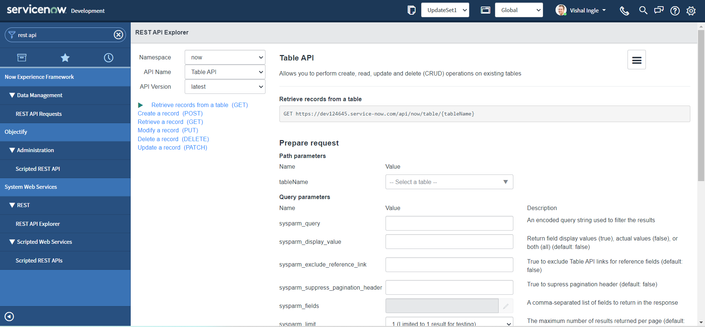
-
In the top-left of the REST API Explorer, click Create a record (POST).

-
In the Path Parameters section, select the Incident (incident) table.

-
In the Request Body section, click Add a field.

-
Select a field and specify a value for the field "Short description" as "Test SD" or whatever you may like: 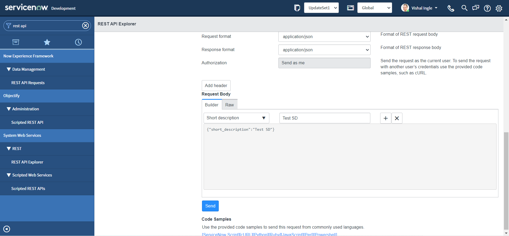
-
Click the plus sign (+) and specify additional fields:
- Description: Test Desc
- Assignment group: 0a52d3dcd7011200f2d224837e6103f2
- Impact: 2
- Urgency: 1
- State: 3
- On hold reason: 4
- Category: inquiry
- Contact type: email

- The request body updates automatically based on your entries (shown in the above image), such as:
{
"short_description": "Test SD",
"description": "Test Desc",
"assignment_group": "0a52d3dcd7011200f2d224837e6103f2",
"impact": "2",
"urgency": "1",
"state": "3",
"hold_reason": "4",
"category": "inquiry",
"contact_type": "email"
}
- We did use all the test values here, as we do not have our instances ready yet for our use case discussed, but we are good to go. After constructing the request, click Send. For pop-up, select OK.


The response includes a Location header that specifies where the incident was created and how to retrieve the incident. The response also indicates the Status code and Execution time (in milliseconds) of the request.


Now, let us verify if the incident really is created.
- Note down the number property from the respose body. 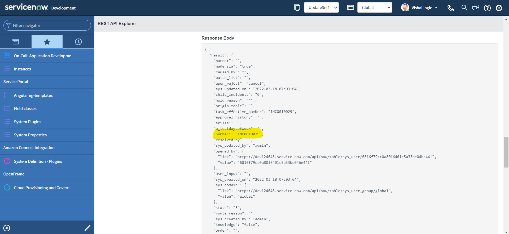
- Navigate to Incident > Open in a new tab, verify that the incident is created with the provided information:
 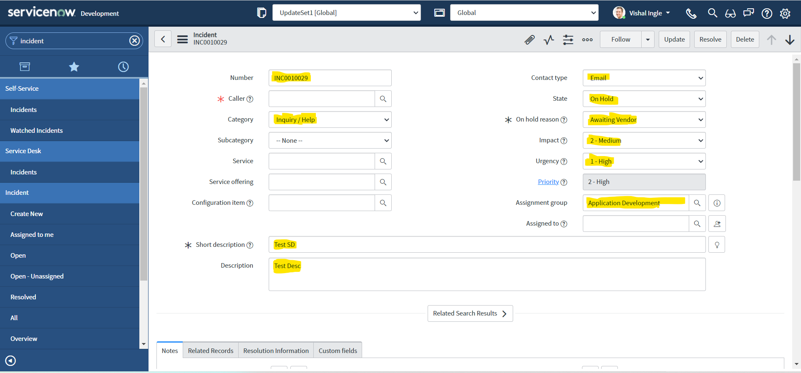
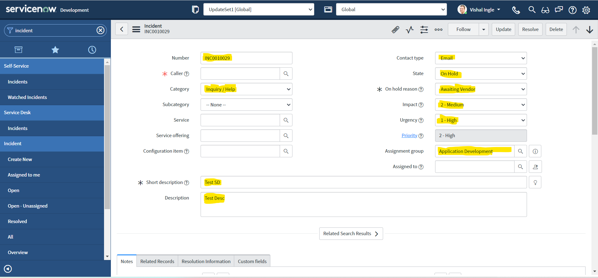
Once you are satified with the testing, It is now time to generate the snippet and move to the next step:
- To create the code sample, Navigate back to REST API Explorer window and click the link for the language of your choice in the REST API Explorer. For the sake of this example, we will select "ServiceNow Script".

- To highlight the code sample for copying, click the Select Snippet button.

- After highlighting the code sample, copy the code sample to the clipboard by using ctrl+c.

If you did everything correctly you should have the code which look similar to the following copied to your clipboard:
var request = new sn_ws.RESTMessageV2()
request.setEndpoint("https://dev124645.service-now.com/api/now/table/incident")
request.setHttpMethod("POST")
//Eg. UserName="admin", Password="admin" for this code sample.
var user = "admin"
var password = "admin"
request.setBasicAuth(user, password)
request.setRequestHeader("Accept", "application/json")
request.setRequestHeader("Content-Type", "application/json")
request.setRequestBody(
'{"short_description":"Test SD","description":"Test Desc","assignment_group":"0a52d3dcd7011200f2d224837e6103f2","impact":"2","urgency":"1","state":"3","hold_reason":"4","category":"inquiry","contact_type":"email"}'
)
var response = request.execute()
gs.log(response.getBody())
Setting up the stage
Once we have our code sample copied, we can use it any server side code such as Business rules, Script includes, Workflows etc. But this code is of no use yet unless we make a very small adjustment to it:
-
It is time to visit our old good friend. Use the Application Navigator to open System Definition > Scripts - Background.

-
Paste the snippet that we did copy from last section into the Run Script field And Click the Run script button to view the results of the script.


Oops, You should receive the User Not Authenticated error and I am sure that you did not expect that. All the code samples generated through the REST API Explorer uses fake credentials. Before using the script in the application to integrate with ServiceNow, we need to update the code to use valid credentials.
Let us modify our code to change the fake credentials by your admin credentials, and re-execute the script:
var request = new sn_ws.RESTMessageV2()
request.setEndpoint("https://dev124645.service-now.com/api/now/table/incident")
request.setHttpMethod("POST")
//Eg. UserName="admin", Password="admin" for this code sample.
var user = "MyAdminUserName"
var password = "MyAdminPassword"
request.setBasicAuth(user, password)
request.setRequestHeader("Accept", "application/json")
request.setRequestHeader("Content-Type", "application/json")
request.setRequestBody(
'{"short_description":"Test SD","description":"Test Desc","assignment_group":"0a52d3dcd7011200f2d224837e6103f2","impact":"2","urgency":"1","state":"3","hold_reason":"4","category":"inquiry","contact_type":"email"}'
)
var response = request.execute()
gs.log(response.getBody())


The above output indicates that our API successfully created the incident. But you surely do not want to expose your admin credentials (and give full control of your instance) to others. And for this purpose and for every integration you will find a Service Account created on the target tool, Let us create one on our Customer instance.
Service Account
A service account is a special type of ServiceNow user account intended to represent a non-human user that needs to authenticate and be authorized to access data in ServiceNow APIs. When an external system makes a web service call to your ServiceNow instance, it must provide login credentials. Rather than using a normal user account to log in, it's best to use a service account specifically set up for that particular integration. Service accounts should be carefully managed, controlled, and audited. In most cases, they can also be associated back to an identity as an owner. However, service accounts should not have the same characteristics as a person logging on to a system. They should not have interactive user interface privileges, nor the capability to operate as a normal account or user.
Dawn Jurek has written a very good community blog which can be found here and which explains why you should use service accounts instead of personal user accounts for web service activities. For the ease I would like to put them here as is:
- Restrict the account activities to application program interface (API) connections, such as JavaScript Object Notation (JSON), Simple Object Access Protocol (SOAP), and Web Service Definition Language (WSDL). Accounts flagged as Web service access only cannot log into the ServiceNow user interface to perform other actions.
- Increase security by conforming to the principle of least privilege.
- Facilitate management, troubleshooting, and debugging of your integration. If a personal user account is used for integrations, you can't easily distinguish the integration transactions of that user from other activities the user performs in the system. On the other hand, if a service account is used for each integration, you can easily tell which integration did what in the system. The service account name is identified under Created by or Updated by in the transaction log and also appears on the records that the integration touches.
- Ensure that everything done by a particular integration service account was related to that specific integration.
- Improve auditability. All transactions can easily be traced to specific service accounts in the system, which facilitates examination and verification of records related to each integration.
Follow the steps below to set up a service account for our integration:
-
Navigate to User Administration > Users.

-
Click New and enter the following information:
- User ID: FirstIntegrationUser
- Password: FirstIntegrationUserPassword
- First name: First
- Last name: IntegrationUser

-
Select this check box for Web service access only to designate this user as a non-interactive user & Click Submit.

-
Now we need to give the service account user any roles necessary to perform the actions that will be carried out by the integration. Navigate to User Administration > Users and then open our recently created Service Account user record "FirstIntegrationUser".
 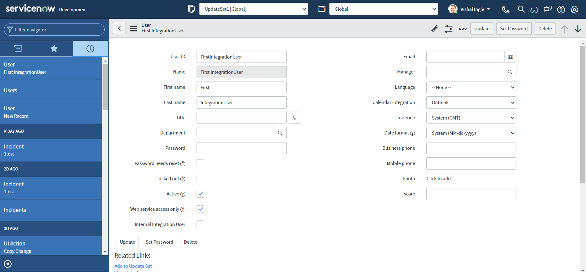
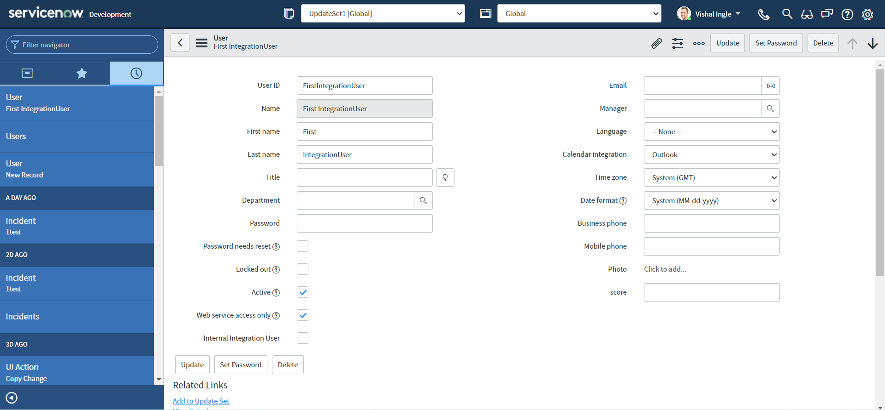 -
In the Roles related list, click Edit.

-
In the Collection list, select the desired roles (for our purpose we will use itil role), and then click Add. 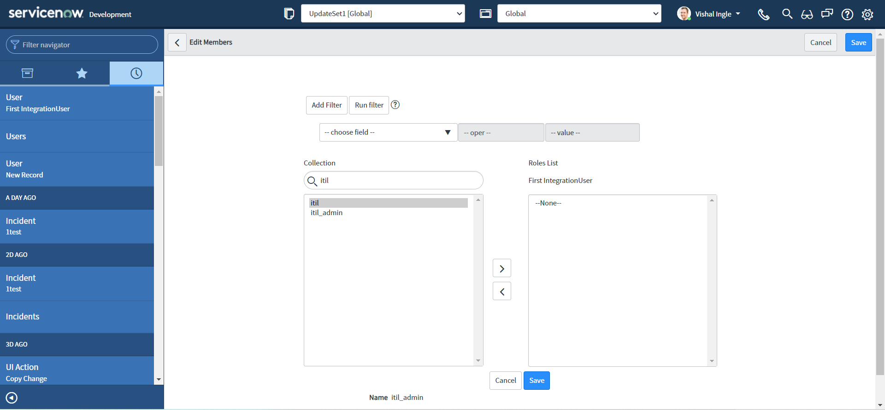
-
Click Save.

Now let us modify our script to have Service account's credentials :
var request = new sn_ws.RESTMessageV2()
request.setEndpoint("https://dev124645.service-now.com/api/now/table/incident")
request.setHttpMethod("POST")
//Eg. UserName="admin", Password="admin" for this code sample.
var user = "FirstIntegrationUser"
var password = "FirstIntegrationUserPassword"
request.setBasicAuth(user, password)
request.setRequestHeader("Accept", "application/json")
request.setRequestHeader("Content-Type", "application/json")
request.setRequestBody(
'{"short_description":"Test SD","description":"Test Desc","assignment_group":"0a52d3dcd7011200f2d224837e6103f2","impact":"2","urgency":"1","state":"3","hold_reason":"4","category":"inquiry","contact_type":"email"}'
)
var response = request.execute()
gs.log(response.getBody())
And if we re-execute the script in System Definition > Scripts - Background with new credentials, you will get the output as below, which indicates that our snippet still works:


Here, we did not see in detail about creating a user or assigning a role to a user. But if you want to dig deep, ServiceNow documentation is the best place to start with and has all that you need, right here and here. Also OOTB any one of itil, sn_incident_write or admin role is required to create an incident. You can read more about incident creation here
Additional Contact Type : API
OOTB, we do not have the contact type as "API" on our Personal Developer Instance (PDI), Let us create one: 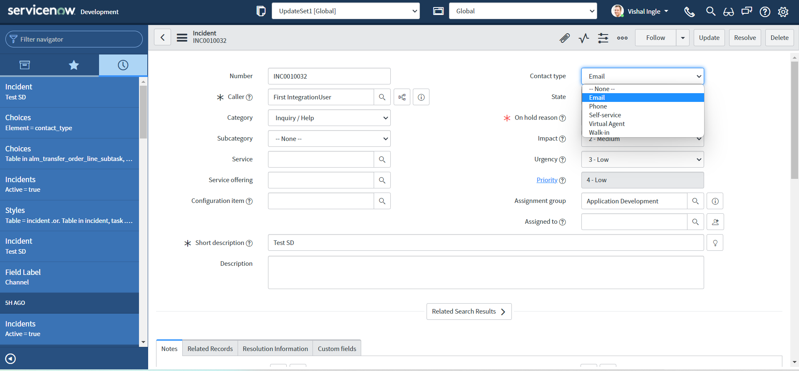
-
Navigate to Incident > Open in a new tab, Click any incident number to open the incident form:


-
Right-click the Contact type field label and select Configure Choices. The Configuring State Choices slushbucket will open.
 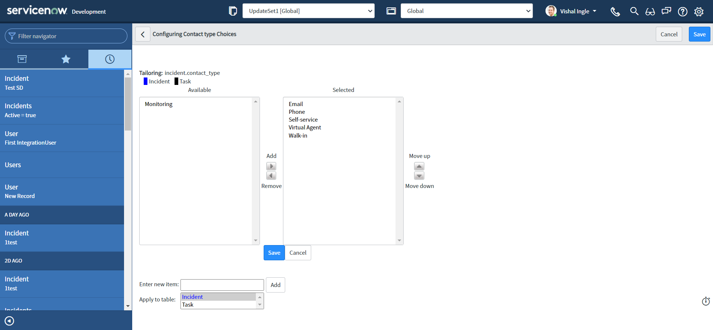
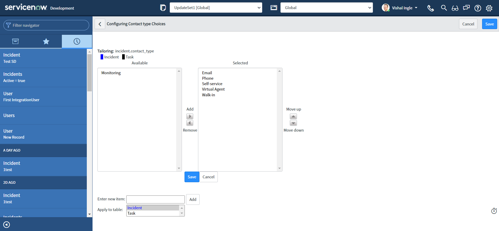 -
In Enter new item: field type API and click Add.

-
Click Save.

If we did everything correctly, we should have and additional contact type now named "API":

Assignment group
Finally, let us create one assignment group to be assigned to the incident created by means of our integration:
-
Navigate to User Administration > Groups and click New button: 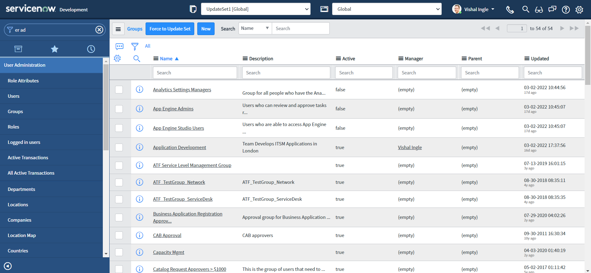
-
Create a group with Name as "FirstIntegrationGroup", Type as "itil" & Parent as "Incident Management" and click Submit button: 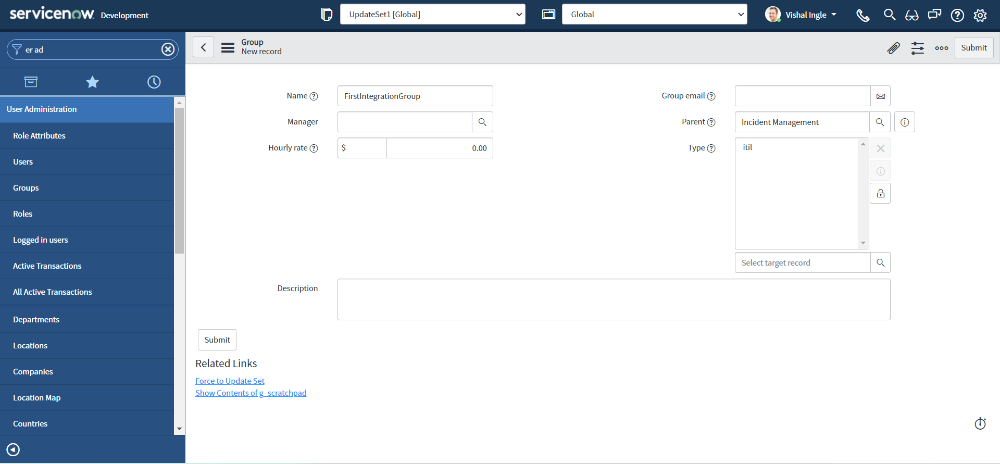
Setting up the Vendor Instance
We have everything that we need from our customer instance set up, but we still need to set our Vendor instance. I have borrowed another PDI from one of my friend to use as Vendor instance, and we are ready fix the prerequisites. However, The San Diego Release of ServiceNow comes with a brand new interface known as the Next Experience UI, or also internally known as Polaris, So you might experience a different look and feel on our Vendor instance. In a way it is good for us as we will be able to easily identify which is our Customer instance (UI16) or Vendor instance (Plaris).
Assignment group
Like our customer instance we need an assignment group to be created on Vendor instance to be used as a trigger to the APIs, Let us create one:
-
Navigate to User Administration > Groups and click New button:


-
Create a group with Name as "VendorAssignmentGroup", Type as "itil" & Parent as "Incident Management" and click Submit button: 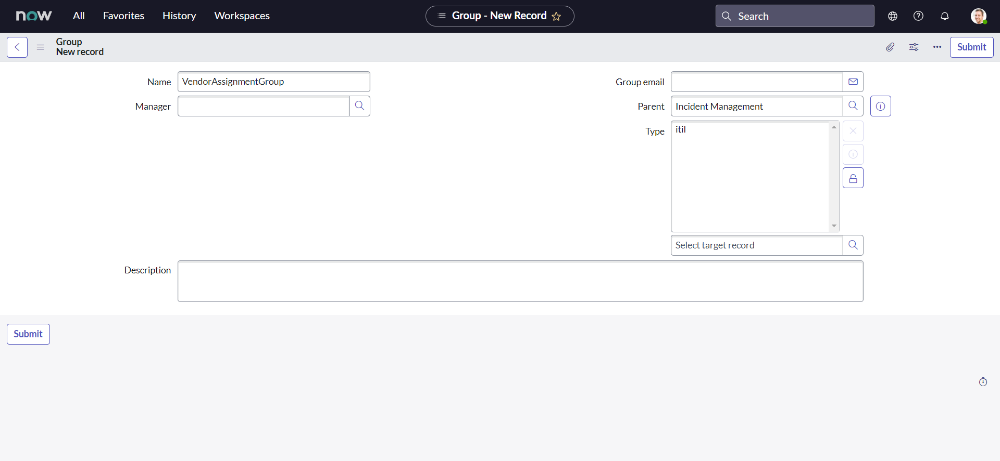
Additional On hold reason : Awaiting Company A Validation
OOTB, we do not have the On hold reason choice as "Awaiting Company A Validation" on our Vendor PDI, Let us create one:

-
Navigate to Incident > Open in a new tab, Click any incident number to open the incident form:


-
Right-click the On hold reason field label and select Configure Choices. The Configuring State Choices slushbucket will open.


-
In Enter new item: field type Awaiting Company A Validation and click Add.

-
Click Save.

If we did everything correctly, we should have and additional On hold reason choice as "Awaiting Company A Validation":

Service & Service Offering
Like assignment group, we also need an Service created on Vendor instance to be used as a trigger to the APIs. In addition we also need a Service offering of which information we will map to the description:
-
Navigate to All > Service Portfolio Management > Business Services and click the New button:


-
Set the Name as "IntegrateNow" and click the Submit button:

-
A new Service named "IntegrateNow" should be created. Click on the name to open the record:

-
Scroll to the bottom of the form to find the related list Offering , then click New to create a new service offering: 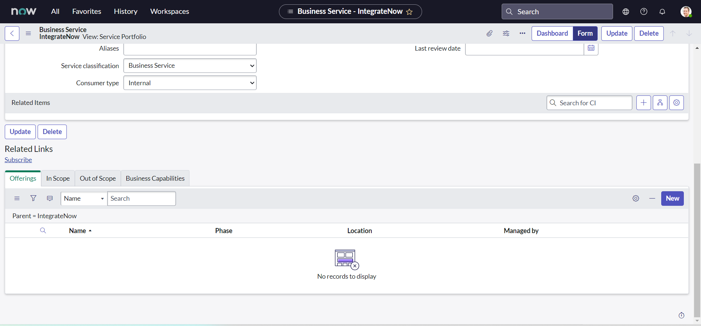
-
Set the Name as "IntegrateNow Support" and click the Submit button:

-
A new Service offering named "IntegrateNow Support" should be created:

Integration time
Till this point, we have all the pre-requisites fulfilled for our integration, and now we are ready to implement our integration. There are different ways of achieving this use case, but we are going to start with the most traditional approach of script. In coming chapters we will enhance our approach to be more efficient. So without furthur due, let us start with the last section of this chapter.
Business Rule
Here, we will create a business rule on our Vendor instance that will trigger the API if our condition matches and creates the incident on customer instance.
- Navigate to All > System Definition > Business Rules.

- Click New. 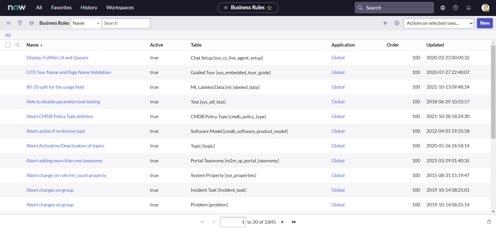
- Enter any Name for the business rule.

- Select the Table that the business rule runs on i.e. Incident [incident]. 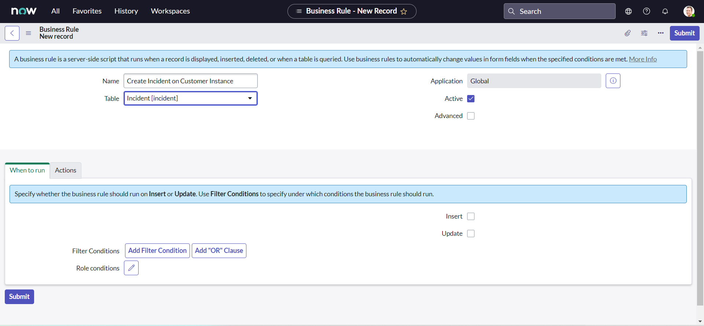
- Select the Advanced check box to see the advanced version of the form.

- For When field select after. 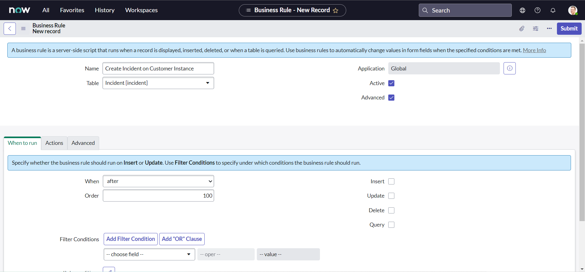
- Select the Insert check box to execute the business rule when a record is inserted into the database.

- Now, copy and paste our modified code sample into the Script field & click Submit.


The final script in the business rule script field should look something like this :
;(function executeRule(current, previous /*null when async*/) {
// Add your code here
var request = new sn_ws.RESTMessageV2()
request.setEndpoint(
"https://dev124645.service-now.com/api/now/table/incident"
)
request.setHttpMethod("POST")
//Eg. UserName="admin", Password="admin" for this code sample.
var user = "FirstIntegrationUser"
var password = "FirstIntegrationUserPassword"
request.setBasicAuth(user, password)
request.setRequestHeader("Accept", "application/json")
request.setRequestHeader("Content-Type", "application/json")
request.setRequestBody(
'{"short_description":"Test SD","description":"Test Desc","assignment_group":"0a52d3dcd7011200f2d224837e6103f2","impact":"2","urgency":"1","state":"3","hold_reason":"4","category":"inquiry","contact_type":"email"}'
)
var response = request.execute()
gs.log(response.getBody())
})(current, previous)
- Finally, set the Filter Conditions as shown in below image & click Update:

Believe it or not, we can even test our integration now. Though our values are still static. If you are curious why did we set the fields the way we do, please refer the ServiceNow documentation here.
- On Vendor instance, Navigate to All > Incident > Create New: 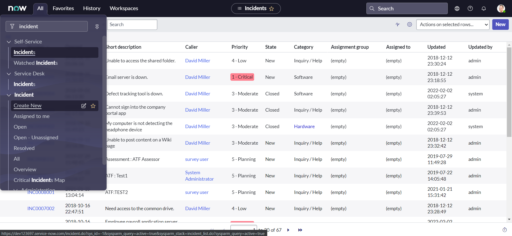
- Set the Service as IntegrateNow & Assignment group as VendorAssignmentGroup:

- Fill all other mandatory fields with the values you may like & click Submit: 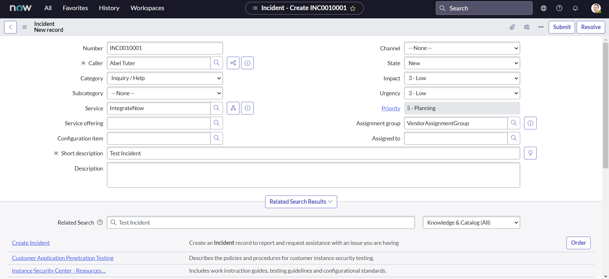
- We can notice from the recent system logs, that our API has successfully been triggered:

- On Customer instance, we can validate that new incident has been created: 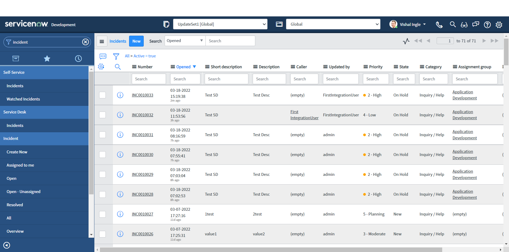
We are not done yet
To be honest, I did not expect this chapter to be this long. We did lot of stuff and I would like to give yourself some time to digest all of these. In the next chapter, we will resume from where we stopped today and will complete our first integration.
What's next?
In the next chapter, we will resume from where we stopped today and will complete our first integration.We will point out some of the concerns with this traditional approach and start the quest for better solutions.
Chapter 5
Finishing Touches
Where did we stop
Last time, we did set up both of our Customer and Vendor instances to make them ready for our use case; We did leverage the REST API Explorer to generate a sample script with some dummy data and used it in Business Rule to create an incident on our Customer instance from a Vendor instance. This is a unique use case where we actually did leverage outbound (triggering the API from Vendor instance) and inbound (providing the inbound API and responding to API request by creating an incident on Customer instance). This difference will be more clear as we proceed with our series and implement some of the awesome use cases. For now let us start from where we did leave last time and finish our first integration.
The final script that we did put in our business rule script field should look something like this :
;(function executeRule(current, previous /*null when async*/) {
// Add your code here
var request = new sn_ws.RESTMessageV2()
request.setEndpoint(
"https://dev124645.service-now.com/api/now/table/incident"
)
request.setHttpMethod("POST")
//Eg. UserName="admin", Password="admin" for this code sample.
var user = "FirstIntegrationUser"
var password = "FirstIntegrationUserPassword"
request.setBasicAuth(user, password)
request.setRequestHeader("Accept", "application/json")
request.setRequestHeader("Content-Type", "application/json")
request.setRequestBody(
'{"short_description":"Test SD","description":"Test Desc","assignment_group":"0a52d3dcd7011200f2d224837e6103f2","impact":"2","urgency":"1","state":"3","hold_reason":"4","category":"inquiry","contact_type":"email"}'
)
var response = request.execute()
gs.log(response.getBody())
})(current, previous)
As we did test last time, the script works as is but it has some issues that needs to be tackeled. Let us point them out and fix one by one.
What is not right
Statics request body
The very first thing that we should fix is the request body or data that we will pass to the server. It is static meaning it will always create an incident with same information. We want it to be dynamic and it should fetch the information from the incident for which the Business Rule is triggered. Notice the following line from the above script :
request.setRequestBody(
'{"short_description":"Test SD","description":"Test Desc","assignment_group":"0a52d3dcd7011200f2d224837e6103f2","impact":"2","urgency":"1","state":"3","hold_reason":"4","category":"inquiry","contact_type":"email"}'
)
setRequestBody() method accepts one string parameter as the body content to send to the web service provider when using PUT or POST HTTP methods. In above example, we are passing a static json string as a parameter value. Which means we can rewrite above line of code as below:
var reqBody = {
short_description: "Test SD",
description: "Test Desc",
assignment_group: "0a52d3dcd7011200f2d224837e6103f2",
impact: "2",
urgency: "1",
state: "3",
hold_reason: "4",
category: "inquiry",
contact_type: "email",
}
request.setRequestBody(JSON.stringify(reqBody))
What we did here is storing the content of our request body as an json object and then convert it to string right before passing it to the server. If you are not aware of how this works, you have probably skipped Chapter 2, where we did talk a lot about json and I encourage you to go back and get familier with it. Now let us use the current argument of Business rule to fetch the values from current incident dynamically:
var reqBody = {
short_description: current.getDisplayValue("short_description"),
impact: current.getValue("impact"),
urgency: current.getValue("urgency"),
state: current.getValue("state"),
}
request.setRequestBody(JSON.stringify(reqBody))
Here, I have removed the other properties from the object on purpose. We will add them back to the object after we perform some manipulation on the information. Why? Remember the tweaks that we need to consider; it is necessary to write a clean code to not make it unnecessarily un-readable. Let us tackle each of this tweaks:
Tweak 1 :
Our Vendor (Company A) instance has an additional On hold reason choice "Awaiting Company A Validation" (for some internal validation). Whereas our Customer (Company B) instance has all Out of the box (OOTB) choices. So, we need to map our custom choice "Awaiting Company A Validation" from the Vendor instance to the "Awaiting Vendor" on the Customer i.e. Company B instance.
To implement this, We could rewrite our line of code as below :
var reqBody = {
short_description: current.getDisplayValue("short_description"),
impact: current.getValue("impact"),
urgency: current.getValue("urgency"),
state: current.getValue("state"),
}
if (current.getValue("state") == "3") {
//if State is On Hold
var onHoldReason = current.getValue("hold_reason")
if (onHoldReason == "6") {
//if Awaiting Company A Validation
onHoldReason = "4" //set to Awaiting Vendor
}
reqBody["hold_reason"] = onHoldReason //add the property to object reqBody
}
request.setRequestBody(JSON.stringify(reqBody))
Tweak 2 :
We have an additional Contact type "API" on Customer instance and no matter through which channel the incident is created on Vendor instance, the target incident on Customer instance should have the Contact type set as "API".
We also have the requirement to always map the incident to the "Inquiry / Help" category on Customer instance:
Since, we always need the static values for contact type and category values, we can leverage the system properties to modify our code as below :
var reqBody = {
short_description: current.getDisplayValue("short_description"),
impact: current.getValue("impact"),
urgency: current.getValue("urgency"),
state: current.getValue("state"),
}
if (current.getValue("state") == "3") {
//if State is On Hold
var onHoldReason = current.getValue("hold_reason")
if (onHoldReason == "6") {
//if Awaiting Company A Validation
onHoldReason = "4" //set to Awaiting Vendor
}
reqBody["hold_reason"] = onHoldReason //add the property to object reqBody
}
reqBody["contact_type"] = gs.getProperty("integratenow.customer.contact_type") //set Contact Type as API
reqBody["category"] = gs.getProperty("integratenow.customer.category") //set Category as Inquiry / Help
reqBody["assignment_group"] = gs.getProperty(
"integratenow.customer.assignment_group"
) //set target/customer Assignment group (FirstIntegrationGroup)
request.setRequestBody(JSON.stringify(reqBody))
Here, I've also set the target assignment group which is predefined by business. But none of these system properties are defined yet, so we need to create them :
- In the Navigation filter, type sys_properties.list and click enter 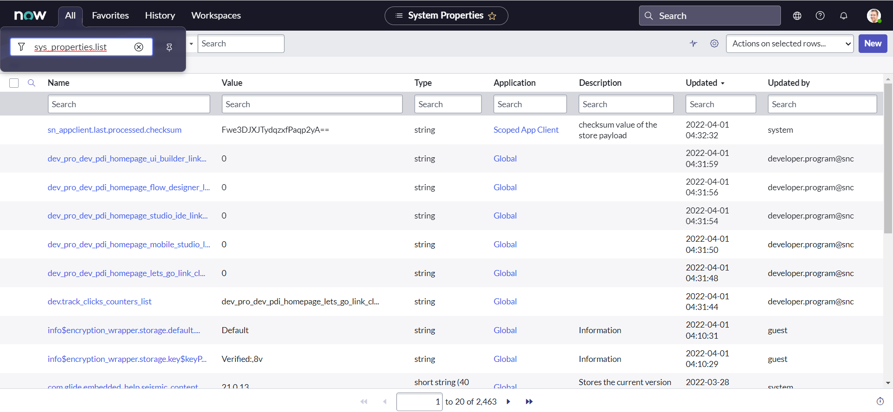
- Click New

- Name the property as integratenow.customer.contact_type

- Set the desired string value for field Value as API & click submit.

- Create two more properties as below:
- Name : integratenow.customer.category, Value : inquiry
- Name : integratenow.customer.assignment_group, Value : a12fc27d87da491028720d47dabb35d9
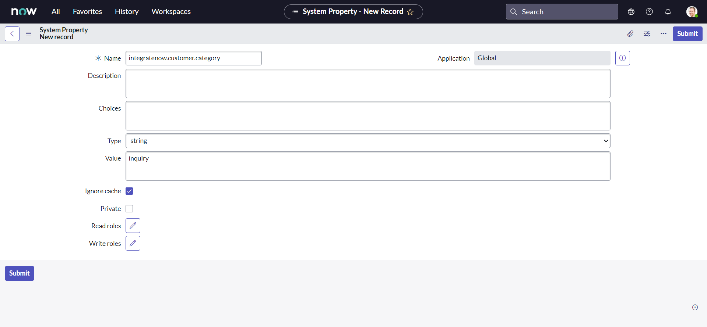
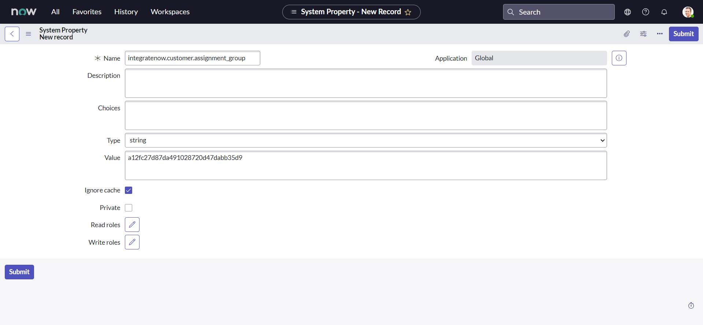

A point to remember here (and going forward), all the custom values for the records that we did create, including group sys_id might be different for you. So be cautious!
Tweak 3 :
And the last tweak that we need to tackle is that the Service, Service Offering and the Description needs to be mapped with to Description field:
Let us rewrite our line of code to accomodate this requirement:
var reqBody = {
short_description: current.getDisplayValue("short_description"),
impact: current.getValue("impact"),
urgency: current.getValue("urgency"),
state: current.getValue("state"),
}
if (current.getValue("state") == "3") {
//if State is On Hold
var onHoldReason = current.getValue("hold_reason")
if (onHoldReason == "6") {
//if Awaiting Company A Validation
onHoldReason = "4" //set to Awaiting Vendor
}
reqBody["hold_reason"] = onHoldReason //add the property to object reqBody
}
reqBody["contact_type"] = gs.getProperty("integratenow.customer.contact_type") //set Contact Type as API
reqBody["category"] = gs.getProperty("integratenow.customer.category") //set Category as Inquiry / Help
reqBody["assignment_group"] = gs.getProperty(
"integratenow.customer.assignment_group"
) //set target/customer Assignment group (FirstIntegrationGroup)
var newDescription =
"Service: " +
current.getDisplayValue("business_service") +
"\n" +
"Service Offering: " +
current.getDisplayValue("service_offering") +
"\n" +
"Description: " +
current.getDisplayValue("description")
reqBody["description"] = newDescription.toString()
request.setRequestBody(JSON.stringify(reqBody))
Here, we did assume that All the fields will have some value, but you are free to modify and make it more fail safe.
Exposed credentials
As you can notice from the following lines from the our script, we are exposing our username and password directly in the script. This is not a best practice and there are better way of implementing the integration that we will see later in this series. For now we are just going to ignore it to save some time, but you could probably write additional system properties to store them.
var user = "FirstIntegrationUser"
var password = "FirstIntegrationUserPassword"
Static endpoints
Observe the below line of code :
request.setEndpoint("https://dev124645.service-now.com/api/now/table/incident")
setEndpoint() method sets the endpoint for the REST message. It accepts one parameter which is the URL of the REST provider you want to interface with, or in other words, endpoint. E.g. in our code we set the endpoint to https://dev124645.service-now.com/api/now/table/incident. The problem with this approach is our endpoint is now static and for any reason if the endpoint changes, we need to change it in every possible script it is used. Again, we are not going to fix it right away. You can utilize the system properties to tackle this problem as well, but this can be handled in a better way that we will see in later chapters.
Our modified Business Rule script should now look something like this :
;(function executeRule(current, previous /*null when async*/) {
// Add your code here
var request = new sn_ws.RESTMessageV2()
request.setEndpoint(
"https://dev124645.service-now.com/api/now/table/incident"
)
request.setHttpMethod("POST")
//Eg. UserName="admin", Password="admin" for this code sample.
var user = "FirstIntegrationUser"
var password = "FirstIntegrationUserPassword"
request.setBasicAuth(user, password)
request.setRequestHeader("Accept", "application/json")
request.setRequestHeader("Content-Type", "application/json")
var reqBody = {
short_description: current.getDisplayValue("short_description"),
impact: current.getValue("impact"),
urgency: current.getValue("urgency"),
state: current.getValue("state"),
}
if (current.getValue("state") == "3") {
//if State is On Hold
var onHoldReason = current.getValue("hold_reason")
if (onHoldReason == "6") {
//if Awaiting Company A Validation
onHoldReason = "4" //set to Awaiting Vendor
}
reqBody["hold_reason"] = onHoldReason //add the property to object reqBody
}
reqBody["contact_type"] = gs.getProperty("integratenow.customer.contact_type") //set Contact Type as API
reqBody["category"] = gs.getProperty("integratenow.customer.category") //set Category as Inquiry / Help
reqBody["assignment_group"] = gs.getProperty(
"integratenow.customer.assignment_group"
) //set target/customer Assignment group (FirstIntegrationGroup)
var newDescription =
"Service: " +
current.getDisplayValue("business_service") +
"\n" +
"Service Offering: " +
current.getDisplayValue("service_offering") +
"\n" +
"Description: " +
current.getDisplayValue("description")
reqBody["description"] = newDescription.toString()
request.setRequestBody(JSON.stringify(reqBody))
var response = request.execute()
gs.log(response.getBody())
})(current, previous)
We have almost completed our first integration and we can perform a test before we do furthur modifications.
- On Vendor instance, Navigate to All > Incident > Create New:
- Set the Service as IntegrateNow & Assignment group as VendorAssignmentGroup: 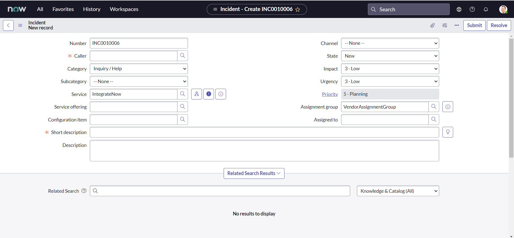
- Fill all other desired fields with the values you may like & click Submit:

- We can notice from the recent system logs, that our API has successfully been triggered:

- On Customer instance, we can validate that new incident has been created:
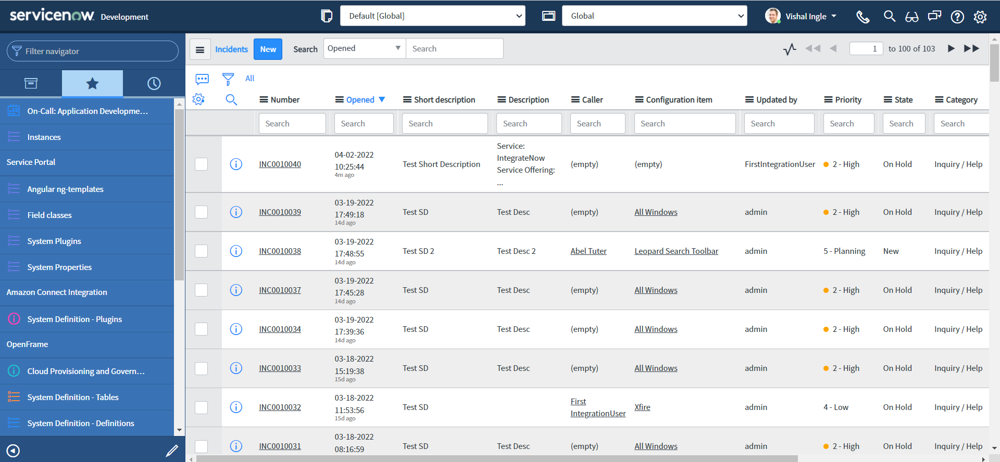

Correlation
Okay, technically we did implement our first use case, but it is not enough. What do I mean? Think of the functional side, How would you know on Customer end that the incident exists in their table corresponds to which incident on Vendor instance? If there are multiple other tools that are generating the incidents using same Service Account then how would you know it corresponds to which tool? Most importantly, If we want to update an incident whenever the incident is updated on either end, how would you know which incident to update? In worst case you might create multiple duplicate incidents for one vendor incident and you need something to prevent that behavior. Seems like a big issue, well how would you tackle this problem? The answer is Correlation.
A correlation establishes a synchronization relationship between records that reside on separate instances. The Correlation ID identifies the remote record whose data values should be used to update the local record. For example, suppose incident record INC100001 correlates to problem record PRB123456 on a remote instance. Whenever changes are made to fields in remote problem PRB123456, the system uses the Correlation ID to identify that local incident INC100001 receives the same field updates.

If you have wondered what Correlation ID and Correlation Display fields are for or if you need better explaination, Please do read an post on SN Guru Blog, which can be found here. But, I would also like to quote a shorter answer from john andersen to the community post which can be found here as is :
These fields are typically used for Integration purposes. You will often store a corresponding third party record ID in the correlation ID field. The correlation Display field can contain a free-form descriptive label of what third party system is replicating or tied to this record.
For example, if you are tying incident records to a third party ticketing system when they are created within ServiceNow, the corresponding ticket ID from the third party would be stored in the correlation ID field. You could also set the correlation display field to be "JIRA", or "REMEDY", or whatever you want to indicate the third party system using this ticket.
ServiceNow documentaion article on Correlation is also a good read which can be found here.
Filling the gaps
In our script we are using the following line as our last line of code, which just logs the returned response to the log table :
gs.log(response.getBody())
getBody() method gets the content of the REST response body as text. E.g. In our case, we did recieve the response back as json string. We can replace this line by following code which converts the json string to json object and then gets the required fields from the json object to be used to store in Correlation fields :
var resBody = JSON.parse(response.getBody())
current.setValue("correlation_id", resBody["result"]["number"])
current.setValue("correlation_display", "CustomerIncNumber")
current.work_notes = JSON.stringify(resBody)
Here, It is important to notice that we are not using setter method for worknotes, as the setValue() method is not supported for journal fields and documented here. Many times I did use the getValue() or setValue() method to with additional comments or work notes and found myself spend a lot of time debugging it. It is very well expained by Tim Woodruff in his ServiceNow Development Handbook - Third Edition book, which is a must read if you want some awesome pro tips and thank yourself later.
As long as our code is concerned, we are parsing the Incident "Number" of Incident created on customer instance by our API and storing it in a field "Correlation ID". We also did store the Correlation Display as a static string "CustomerIncNumber" to indicate it represents the Incident number of the customer instance. In the last line I'm just adding the whole response from the API to the activity streams, You would not do it in real time unless there is a use case.
Similar to the above, we also need to store the Correlation ID and Correlation Display fields on customer instance with the current incident number and some identifier text. Let us modify our code one last time to include the following lines to it :
reqBody["correlation_id"] = current.getDisplayValue("number")
reqBody["correlation_display"] = "VendorIncNumber"
Our final Business Rule script should look something like this now:
;(function executeRule(current, previous /*null when async*/) {
// Add your code here
var request = new sn_ws.RESTMessageV2()
request.setEndpoint(
"https://dev124645.service-now.com/api/now/table/incident"
)
request.setHttpMethod("POST")
//Eg. UserName="admin", Password="admin" for this code sample.
var user = "FirstIntegrationUser"
var password = "FirstIntegrationUserPassword"
request.setBasicAuth(user, password)
request.setRequestHeader("Accept", "application/json")
request.setRequestHeader("Content-Type", "application/json")
var reqBody = {
short_description: current.getDisplayValue("short_description"),
impact: current.getValue("impact"),
urgency: current.getValue("urgency"),
state: current.getValue("state"),
}
if (current.getValue("state") == "3") {
//if State is On Hold
var onHoldReason = current.getValue("hold_reason")
if (onHoldReason == "6") {
//if Awaiting Company A Validation
onHoldReason = "4" //set to Awaiting Vendor
}
reqBody["hold_reason"] = onHoldReason //add the property to object reqBody
}
reqBody["contact_type"] = gs.getProperty("integratenow.customer.contact_type") //set Contact Type as API
reqBody["category"] = gs.getProperty("integratenow.customer.category") //set Category as Inquiry / Help
reqBody["assignment_group"] = gs.getProperty(
"integratenow.customer.assignment_group"
) //set target/customer Assignment group (FirstIntegrationGroup)
var newDescription =
"Service: " +
current.getDisplayValue("business_service") +
"\n" +
"Service Offering: " +
current.getDisplayValue("service_offering") +
"\n" +
"Description: " +
current.getDisplayValue("description")
reqBody["description"] = newDescription.toString()
reqBody["correlation_id"] = current.getDisplayValue("number")
reqBody["correlation_display"] = "VendorIncNumber"
request.setRequestBody(JSON.stringify(reqBody))
var response = request.execute()
var resBody = JSON.parse(response.getBody())
current.setValue("correlation_id", resBody["result"]["number"])
current.setValue("correlation_display", "CustomerIncNumber")
current.work_notes = JSON.stringify(resBody)
})(current, previous)
Finally, Since we should not use current.update() in our script, let us change the Business Rule trigger condition as below:
- When : before
- Insert : Checked
- Update : Checked
- Filter Conditions :
- Service is IntegrateNow
- Assignment group is VendorAssignmentGroup
- Correlation ID is empty
- Correlation Display is empty

Final testing
So, we have finally arrived at the point for which we did wait so long. We did complete our first integration and it is time to test it.
- On Vendor instance, Navigate to All > Incident > Create New:
- Set the Service as IntegrateNow & Assignment group as VendorAssignmentGroup; fill all other desired fields with the values you may like & click Submit:

- We can notice from the worknotes, that our API has successfully been triggered and returned the response back:

- we can validate the implementation by personalizing incident list view and bringing both the Correlation fields to list :

- Similarly, on customer instance, we can personalize incident list view by bringing both the Correlation fields to list view :

Your assignment
If you have noticed closely, we are still not passing the incident caller to our API and Hence, caller_id field is empty on our customer instance. Assuming their can be duplicate users with same name and email id but unique user name or user id, modify our script accordingly to set the caller.
What's next?
In the next chapter, we will visit another conceptual aside section to learn everything we need to work with XML responses. This is going to be extermely useful for us to work with the integration systems that handles only XML responses.
Chapter 6
Working With XMLs
So far, we have worked with easier JSON responses, but often we need to work with other types e.g. XML, YAML or CSV. Understanding how to work with XMLs is extermely important not only when you work with web services like RSS or SOAP, but also REST when you receive back the responses in XML format. In this chapter, we will try to learn some of the important concepts regarding XML that will help us to work with XML when we interact with them. Here, we will try to limit ourselves to only concepts essential to work with ServiceNow web services and it is extremely important that we understand them very well. If you want to learn more about these concepts, the best place is XML Tutorial on w3schools.com.
XML or Extensible Markup Language is a markup language much like HTML, but without predefined tags to use. Instead, you define your own tags designed specifically for your needs. XML was designed and is a powerful way to store and transport data in a format that can be both human and machine-readable. Because of the custom tags, it's something that humans can read and understand. Web services use XML to code and to decode data, and SOAP to transport it.

Many finds working with XML difficult because of its structured nature, which requires more efforts for parsing the XML document. But once you understand the magic that is known as XML, you will be amazed with it's capabilities. And most important thing about XML is, it is everywhere!
Structure of an XML document
XML describes a class of data objects called XML documents. The whole structure of XML is built on tags. Use the Application Navigator to open REST > REST API Explorer:
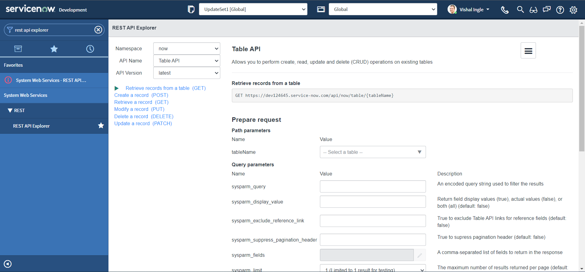
In the top-left of the REST API Explorer, Make sure that method selected is Retrieve records from a table (GET). In the Path Parameters section, select the Incident (incident) table.
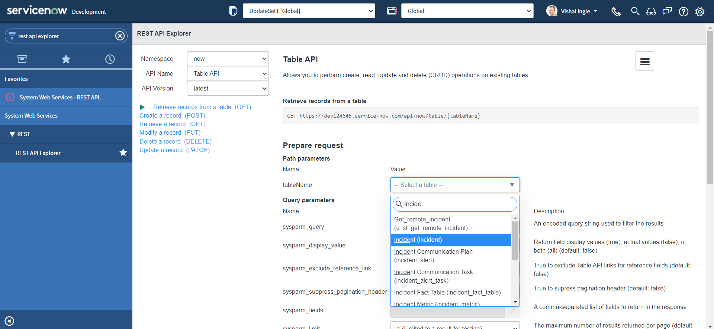
The response by default will return all the incident fields, but we will only need a couple of the fields back in our response, We can specify those in the sysparm_fields parameter. Let us limit sysparm_fields to Number, Caller and Short Description:
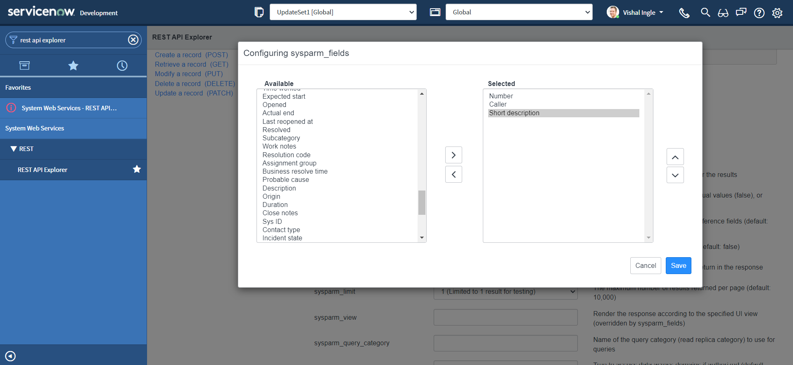
 Let us change the Reesponse format to application/xml and click Send.
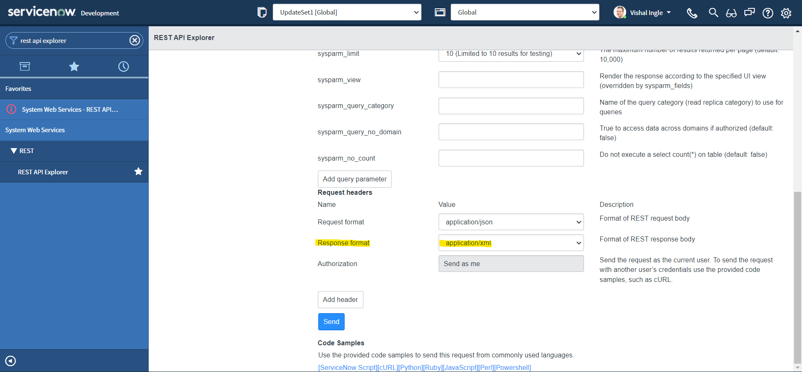
Let us change the Reesponse format to application/xml and click Send.
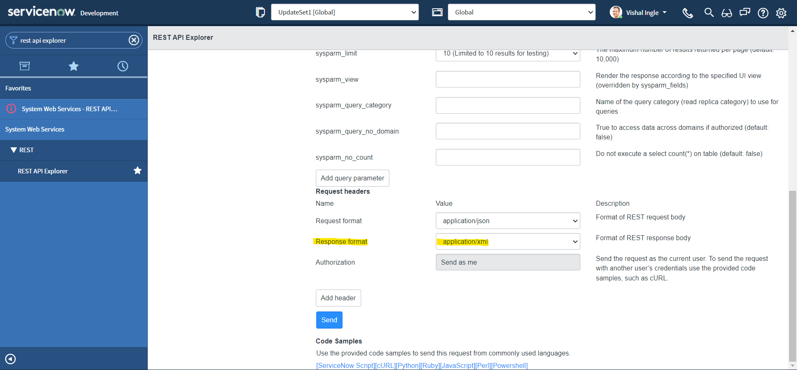
Observe the response body. This, like JSON, is a single line response that we received and is difficult to read:

<?xml version="1.0" encoding="UTF-8"?><response><result><number>INC0000060</number><short_description>Unable to connect to email</short_description><caller_id><link>https://dev124645.service-now.com/api/now/table/sys_user/681ccaf9c0a8016400b98a06818d57c7</link><value>681ccaf9c0a8016400b98a06818d57c7</value></caller_id></result></response>
Let us copy the response and paste it into online prettifier tools like JSON formatter or Code Beautify, which will prettify our XML like below :
<?xml version="1.0" encoding="UTF-8"?>
<response>
<result>
<number>INC0000060</number>
<short_description>Unable to connect to email</short_description>
<caller_id>
<link>https://dev124645.service-now.com/api/now/table/sys_user/681ccaf9c0a8016400b98a06818d57c7</link>
<value>681ccaf9c0a8016400b98a06818d57c7</value>
</caller_id>
</result>
</response>


Here, The document starts with a <response> tag, followed by a <result> element that gives the information about the incident i.e Number, Short Description and Caller. Also, The tags are closed in a sequence; <response> tag is closed after the <result> tag with the use of / character.
However, notice the very first line of our example, which is also known as XML prolog:
<?xml version="1.0" encoding="UTF-8"?>
The above line of code is not a tag. It is used just for the transmission of the meta-data of a document i.e. version & character encoding used in the document. The XML prolog is optional. If it exists, it must come first in the document.
XML documents form a tree structure that starts at "the root" and branches to "the leaves". The XML above is quite self-descriptive:
- It has a information about Incident Number i.e.
INC0000060specified in thenumbertag. - It has a information about incident Short Description i.e.
Unable to connect to emailspecified in theshort_descriptiontag. - It has a a information about incident Caller specified in the
caller_idtag. Elementcaller_idhas the two child elements:linktag provides the API endpoint, which can be used to fetch information about the Incident caller i.e.https://dev124645.service-now.com/api/now/table/sys_user/681ccaf9c0a8016400b98a06818d57c7valuetag provides the SysID of the Incident caller i.e.681ccaf9c0a8016400b98a06818d57c7
The tags in the example above (like <number> and <link>) are not defined in any XML standard. These tags are "invented" by the author of the XML document.
The first line after the prolog defines the root element of the document:
<response>
The next line starts a <result> element, which is a child element of response:
<result>
The <result> element have 3 child elements: <number>, <short_description> & <caller_id>. Similarly, <caller_id> have 2 child elements: <link> and <value>.
One of the important point to remember here is, XML stores data in plain text format. This provides a software- and hardware-independent way of storing, transporting, and sharing data.
The XML Tree Structure
An XML tree starts at a root element and branches from the root to child elements and all elements can have sub elements (child elements).
- The terms parent, child, and sibling are used to describe the relationships between elements.
- Parents have children.
- Children have parents.
- Siblings are children on the same level (brothers and sisters).
- All elements can have text content and attributes.
<root>
<child>
<subchild>.....</subchild>
</child>
</root>
Consider the below image, copied from w3schools.com:

The image above represents books in this XML:
<?xml version="1.0" encoding="UTF-8"?>
<bookstore>
<book category="cooking">
<title lang="en">Everyday Italian</title>
<author>Giada De Laurentiis</author>
<year>2005</year>
<price>30.00</price>
</book>
<book category="children">
<title lang="en">Harry Potter</title>
<author>J K. Rowling</author>
<year>2005</year>
<price>29.99</price>
</book>
<book category="web">
<title lang="en">Learning XML</title>
<author>Erik T. Ray</author>
<year>2003</year>
<price>39.95</price>
</book>
</bookstore>
An XML element is everything from (including) the element's start tag to (including) the element's end tag and an element can contain:
- text
- attributes
- other elements
- a mix of the above
In the example above:
<title>,<author>,<year>, and<price>have text content because they contain text (like 29.99).<bookstore>and<book>have element contents, because they contain elements.<book>has an attribute (category="children").
An element with no content is said to be empty. In XML, you can indicate an empty element like this:
<business_service></business_service>
OR you can also use a so called self-closing tag:
<business_service/>
XML elements can have attributes, designed to contain data related to a specific element. Attribute values must always be quoted. Either single or double quotes can be used. E.g. a display_value attribute is used in this example:
<xml>
<incident>
<active>true</active>
<caller_id display_value="Joe Employee">681ccaf9c0a8016400b98a06818d57c7</caller_id>
<category>network</category>
<short_description>Wireless access is down in my area</short_description>
</incident>
</xml>
The metadata (data about data) should be stored as attributes, and the data itself should be stored as elements. E.g. The id attributes below are for identifying the different notes. It is not a part of the note itself.
<messages>
<note id="501">
<to>Tove</to>
<from>Jani</from>
<heading>Reminder</heading>
<body>Don't forget me this weekend!</body>
</note>
<note id="502">
<to>Jani</to>
<from>Tove</from>
<heading>Re: Reminder</heading>
<body>I will not</body>
</note>
</messages>
XML design rules
XML document must be well-formed. XML documents that conform to the syntax rules below are said to be "Well Formed" XML documents:
- XML documents must contain one root element that is the parent of all other elements:
<root>
<child>
<subchild>.....</subchild>
</child>
</root>
In this example <response> is the root element:
<?xml version="1.0" encoding="UTF-8"?>
<response>
<result>
<number>INC0000060</number>
<short_description>Unable to connect to email</short_description>
<caller_id>
<link>https://dev124645.service-now.com/api/now/table/sys_user/681ccaf9c0a8016400b98a06818d57c7</link>
<value>681ccaf9c0a8016400b98a06818d57c7</value>
</caller_id>
</result>
</response>
-
Element names must start with a letter or underscore.
-
Element names cannot start with the letters xml (or XML, or Xml, etc).
-
Element names can contain letters, digits, hyphens, underscores, and periods.
-
Element names cannot contain spaces.
-
In XML, it is illegal to omit the closing tag. All elements must have a closing tag:
<actions_taken/>
<active>true</active>
- XML tags are case sensitive. The tag
<Active>is different from the tag<active>. Opening and closing tags must be written with the same case:
<short_description>Wireless access is down in my area</short_description>
- In XML, all elements must be properly nested within each other. E.g. In the example below, "Properly nested" simply means that since the
<active>element is opened inside the<incident>element, it must be closed inside the<incident>element:
<incident>
<active>true</active>
</incident>
- XML elements can have attributes in name/value pairs just like in HTML. In XML, the attribute values must always be quoted:
<assignment_group display_value="Incident Management" name="Incident Management">12a586cd0bb23200ecfd818393673a30</assignment_group>
- Some characters have a special meaning in XML, they should be replaced with an entity reference. E.g. If you place a character like "<" inside an XML element, it will generate an error because the parser interprets it as the start of a new element and it should be replaced with an entity reference
<:
<message>salary < 1000</message>
-
XML stores a new line as LF.
-
Avoid "-". If you name something "first-name", some software may think you want to subtract "name" from "first".
-
Avoid ".". If you name something "first.name", some software may think that "name" is a property of the object "first".
-
Avoid ":". Colons are reserved for namespaces.
XML DOM
The XML DOM defines a standard way for accessing and manipulating XML documents. It presents an XML document as a tree-structure. The XML DOM is a standard for how to get, change, add, and delete XML elements. All XML elements can be accessed through the XML DOM. Understanding the DOM is a must for anyone working with XML. You can use online tools such XML Viewer to visualize a tree structure of our XML document:

XML Parser & XMLDocument2
XML parser can convert text into an XML DOM object. ServiceNow provides a JavaScript Object wrapper for parsing and extracting XML data from an XML string known as XMLDocument2. An XML string has a tree structure, and the parts of the structure are called nodes. An XMLDocument2 object deals with two node types: element, and document element (root node of the XML tree).
Let us generate the snippet for the GET method that we did use earlier to receive Incident information:
- To create the code sample, Navigate back to REST API Explorer window and click the link for the language of your choice in the REST API Explorer. For the sake of this example, we will select "ServiceNow Script".

- To highlight the code sample for copying, click the Select Snippet button.

- After highlighting the code sample, copy the code sample to the clipboard by using ctrl+c.

If you did everything correctly you should have the code which look similar to the following copied to your clipboard:
var request = new sn_ws.RESTMessageV2()
request.setEndpoint(
"https://dev124645.service-now.com/api/now/table/incident?sysparm_fields=number%2Ccaller_id%2Cshort_description&sysparm_limit=1"
)
request.setHttpMethod("GET")
//Eg. UserName="admin", Password="admin" for this code sample.
var user = "admin"
var password = "admin"
request.setBasicAuth(user, password)
request.setRequestHeader("Accept", "application/xml")
var response = request.execute()
gs.log(response.getBody())
It is time to visit our old good friend. Use the Application Navigator to open System Definition > Scripts - Background and Paste the snippet that we did copy from last step into the Run Script field.
 Let us modify our code to change the fake credentials by your admin credentials, and re-execute the script and Click the Run script button to view the results of the script:
Let us modify our code to change the fake credentials by your admin credentials, and re-execute the script and Click the Run script button to view the results of the script:
var request = new sn_ws.RESTMessageV2()
request.setEndpoint(
"https://dev124645.service-now.com/api/now/table/incident?sysparm_fields=number%2Ccaller_id%2Cshort_description&sysparm_limit=1"
)
request.setHttpMethod("GET")
//Eg. UserName="admin", Password="admin" for this code sample.
var user = "MyAdminUserName"
var password = "MyAdminPassword"
request.setBasicAuth(user, password)
request.setRequestHeader("Accept", "application/xml")
var response = request.execute()
gs.log(response.getBody())


Well, we received the XML response back from our API, but just like JSON responses, it is a XML string. Let us add typeof to the logger function to get the type of our response and re-execute the script:
var request = new sn_ws.RESTMessageV2()
request.setEndpoint(
"https://dev124645.service-now.com/api/now/table/incident?sysparm_fields=number%2Ccaller_id%2Cshort_description&sysparm_limit=1"
)
request.setHttpMethod("GET")
//Eg. UserName="admin", Password="admin" for this code sample.
var user = "MyAdminUserName"
var password = "MyAdminPassword"
request.setBasicAuth(user, password)
request.setRequestHeader("Accept", "application/xml")
var response = request.execute()
gs.log(typeof response.getBody())
 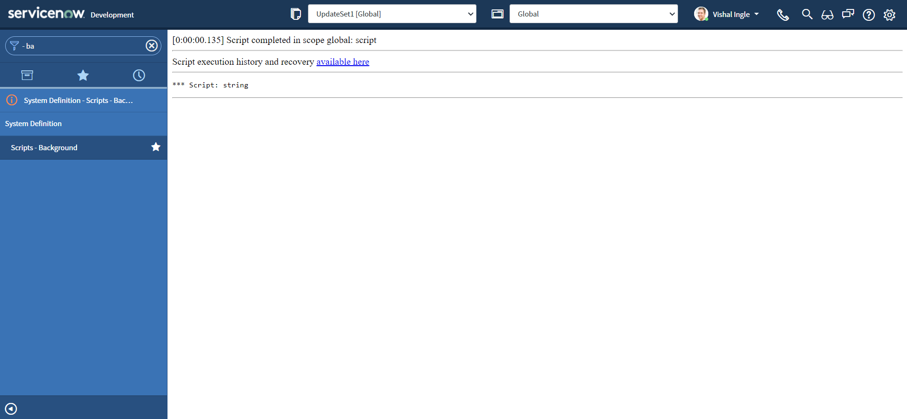
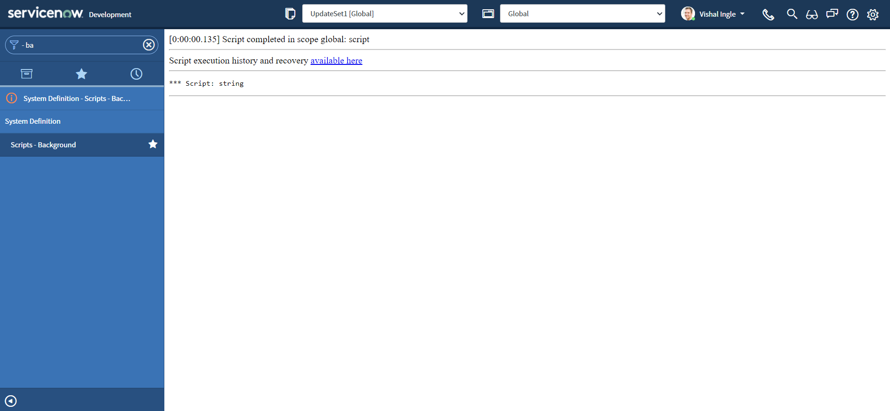
XMLDocument2 & parseXML
XMLDocument2() Creates an XMLDocument2 object. we can use JavaScript class "XMLDocument2" to create an object from an XML string. parseXML method parses the XML string and loads it into the XMLDocument2 object. Lets modify our code and re-execute the script:
var request = new sn_ws.RESTMessageV2()
request.setEndpoint(
"https://dev124645.service-now.com/api/now/table/incident?sysparm_fields=number%2Ccaller_id%2Cshort_description&sysparm_limit=1"
)
request.setHttpMethod("GET")
//Eg. UserName="admin", Password="admin" for this code sample.
var user = "MyAdminUserName"
var password = "MyAdminPassword"
request.setBasicAuth(user, password)
request.setRequestHeader("Accept", "application/xml")
var response = request.execute()
var xmlString = response.getBody()
var xmlDoc = new XMLDocument2()
xmlDoc.parseXML(xmlString)
gs.log(typeof xmlDoc)
gs.log(xmlDoc)

As we can see from the output, we have converted our string representation of XML into XMLDocument2 object.

getDocumentElement
getDocumentElement gets the document element node of the XMLdocument2 object. The document element node is the root node. Lets modify our code and re-execute the script:
var request = new sn_ws.RESTMessageV2()
request.setEndpoint(
"https://dev124645.service-now.com/api/now/table/incident?sysparm_fields=number%2Ccaller_id%2Cshort_description&sysparm_limit=1"
)
request.setHttpMethod("GET")
//Eg. UserName="admin", Password="admin" for this code sample.
var user = "MyAdminUserName"
var password = "MyAdminPassword"
request.setBasicAuth(user, password)
request.setRequestHeader("Accept", "application/xml")
var response = request.execute()
var xmlString = response.getBody()
var xmlDoc = new XMLDocument2()
xmlDoc.parseXML(xmlString)
//returns the root node of the document tree.
var rootNode = xmlDoc.getDocumentElement()
gs.info(rootNode)


XPath
XPath stands for XML Path Language. XPath can be used to navigate through elements and attributes in an XML document. It uses path expressions to navigate in XML documents. These path expressions look very much like the expressions you see when you work with a traditional computer file system.

XML documents are treated as trees of nodes. In XPath, there are seven kinds of nodes: element, attribute, text, namespace, processing-instruction, comment, and document nodes. The topmost element of the tree is called the root element. Look at the following XML document:
<?xml version="1.0" encoding="UTF-8"?>
<bookstore>
<book category="cooking">
<title lang="en">Everyday Italian</title>
<author>Giada De Laurentiis</author>
<year>2005</year>
<price>30.00</price>
</book>
<book category="children">
<title lang="en">Harry Potter</title>
<author>J K. Rowling</author>
<year>2005</year>
<price>29.99</price>
</book>
<book category="web">
<title lang="en">XQuery Kick Start</title>
<author>James McGovern</author>
<author>Per Bothner</author>
<author>Kurt Cagle</author>
<author>James Linn</author>
<author>Vaidyanathan Nagarajan</author>
<year>2003</year>
<price>49.99</price>
</book>
<book category="web">
<title lang="en">Learning XML</title>
<author>Erik T. Ray</author>
<year>2003</year>
<price>39.95</price>
</book>
</bookstore>
Example of nodes in the XML document above:
<bookstore> (root element node)
<author>J K. Rowling</author> (element node)
lang="en" (attribute node)
Selecting Nodes
XPath uses path expressions to select nodes in an XML document. The node is selected by following a path or steps. The most useful path expressions are listed below:
| Expression | Description | Example | Result |
|---|---|---|---|
| nodename | Selects all nodes with the name "nodename" | bookstore | Selects all nodes with the name "bookstore" |
| / | Selects from the root node | /bookstore | Selects the root element bookstore |
| bookstore/book | Selects all book elements that are children of bookstore | ||
| // | Selects nodes in the document from the current node that match the selection no matter where they are | //book | Selects all book elements no matter where they are in the document |
| bookstore//book | Selects all book elements that are descendant of the bookstore element, no matter where they are under the bookstore element | ||
| . | Selects the current node | ||
| .. | Selects the parent of the current node | ||
| @ | Selects attributes | //@ | lang Selects all attributes that are named lang |
Predicates
Predicates are used to find a specific node or a node that contains a specific value. Predicates are always embedded in square brackets. In the table below we have listed some path expressions with predicates and the result of the expressions:
| Path Expression | Result |
|---|---|
| /bookstore/book[1] | Selects the first book element that is the child of the bookstore element. |
| /bookstore/book[last()] | Selects the last book element that is the child of the bookstore element |
| /bookstore/book[last()-1] | Selects the last but one book element that is the child of the bookstore element |
| /bookstore/book[position()<3] | Selects the first two book elements that are children of the bookstore element |
| //title[@lang] | Selects all the title elements that have an attribute named lang |
| //title[@lang='en'] | Selects all the title elements that have a "lang" attribute with a value of "en" |
| /bookstore/book[price>35.00] | Selects all the book elements of the bookstore element that have a price element with a value greater than 35.00 |
| /bookstore/book[price>35.00]/title | Selects all the title elements of the book elements of the bookstore element that have a price element with a value greater than 35.00 |
Selecting Unknown Nodes
XPath wildcards can be used to select unknown XML nodes. In the table below we have listed some path expressions and the result of the expressions:
| Wildcard | Description | Path Expression | Result |
|---|---|---|---|
| * | Matches any element node | /bookstore/* | Selects all the child element nodes of the bookstore element |
| //* | Selects all elements in the document | ||
| @* | Matches any attribute node | //title[@*] | Selects all title elements which have at least one attribute of any kind |
| node() | Matches any node of any kind |
Selecting Several Paths
By using the | operator in an XPath expression you can select several paths. In the table below we have listed some path expressions and the result of the expressions:
| Path Expression | Result |
|---|---|
| //book/title | //book/price | Selects all the title AND price elements of all book elements |
| //title | //price | Selects all the title AND price elements in the document |
| /bookstore/book/title | //price | Selects all the title elements of the book element of the bookstore element AND all the price elements in the document |
XPath Axes
An axis represents a relationship to the context (current) node, and is used to locate nodes relative to that node on the tree.
| AxisName | Result |
|---|---|
| ancestor | Selects all ancestors (parent, grandparent, etc.) of the current node |
| ancestor-or-self | Selects all ancestors (parent, grandparent, etc.) of the current node and the current node itself |
| attribute | Selects all attributes of the current node |
| child | Selects all children of the current node |
| descendant | Selects all descendants (children, grandchildren, etc.) of the current node |
| descendant-or-self | Selects all descendants (children, grandchildren, etc.) of the current node and the current node itself |
| following | Selects everything in the document after the closing tag of the current node |
| following-sibling | Selects all siblings after the current node |
| namespace | Selects all namespace nodes of the current node |
| parent | Selects the parent of the current node |
| preceding | Selects all nodes that appear before the current node in the document, except ancestors, attribute nodes and namespace nodes |
| preceding-sibling | Selects all siblings before the current node |
| self | Selects the current node |
Location Path Expression
A location path can be absolute or relative. An absolute location path starts with a slash ( / ) and a relative location path does not. In both cases the location path consists of one or more steps, each separated by a slash:
An absolute location path:
/step/step/...
A relative location path:
step/step/...
The syntax for a location step is:
axisname::nodetest[predicate]
| Example | Result |
|---|---|
| child::book | Selects all book nodes that are children of the current node |
| attribute::lang | Selects the lang attribute of the current node |
| child::* | Selects all element children of the current node |
| attribute::* | Selects all attributes of the current node |
| child::text() | Selects all text node children of the current node |
| child::node() | Selects all children of the current node |
| descendant::book | Selects all book descendants of the current node |
| ancestor::book | Selects all book ancestors of the current node |
| ancestor-or-self::book | Selects all book ancestors of the current node - and the current as well if it is a book node |
| child::*/child::price | Selects all price grandchildren of the current node |
getNode & getNodeText
getNode gets the node specified in the xPath. getNodeText gets all the text child nodes from the node referenced in the specified XPath. Let us modify our code to fetch the number element from our response and re-execute the script:
var request = new sn_ws.RESTMessageV2()
request.setEndpoint(
"https://dev124645.service-now.com/api/now/table/incident?sysparm_fields=number%2Ccaller_id%2Cshort_description&sysparm_limit=1"
)
request.setHttpMethod("GET")
//Eg. UserName="admin", Password="admin" for this code sample.
var user = "MyAdminUserName"
var password = "MyAdminPassword"
request.setBasicAuth(user, password)
request.setRequestHeader("Accept", "application/xml")
var response = request.execute()
var xmlString = response.getBody()
var xmlDoc = new XMLDocument2()
xmlDoc.parseXML(xmlString)
var node = xmlDoc.getNode("/response/result/number")
gs.info(node)
 Your output should look something like this:
Your output should look something like this:
<number>INC0000060</number>
If you are wondering how the result of the background script is displayed on the same page, that is probabaly because you are unaware of an awesome extension SN Utils by Arnoud Kooi. I strongly encourage you to have this extension installed on your personal computer to learn the amazing capabilities of this extension and increase your productivity.
Now, lets modify the script one more time to get the incident number from number element:
var request = new sn_ws.RESTMessageV2()
request.setEndpoint(
"https://dev124645.service-now.com/api/now/table/incident?sysparm_fields=number%2Ccaller_id%2Cshort_description&sysparm_limit=1"
)
request.setHttpMethod("GET")
//Eg. UserName="admin", Password="admin" for this code sample.
var user = "MyAdminUserName"
var password = "MyAdminPassword"
request.setBasicAuth(user, password)
request.setRequestHeader("Accept", "application/xml")
var response = request.execute()
var xmlString = response.getBody()
var xmlDoc = new XMLDocument2()
xmlDoc.parseXML(xmlString)
var nodeText = xmlDoc.getNodeText("/response/result/number")
gs.info(nodeText)
After executing the script, your output should look something similar to the following:
INC0000060

getFirstNode & getNextNode
getFirstNode gets the first node in the specified xPath. getNextNode gets the node after the specified node. Let us assume the following document from ServiceNow API documentation:
<store>
<resources company="ABC Inc">
<resources type="servers" />
</resources>
<resources company="XYZ Inc">
<resource type="bookstore">
<book>
<title>Windows</title>
<price>10</price>
</book>
<book year="2009">
<title>Harry Potter</title>
<price>50</price>
</book>
<book year="1999">
<title>Learning XML</title>
<price>120</price>
</book>
<book year="2019">
<title>Learning Java</title>
<price>99</price>
</book>
</resource>
</resources>
</store>
The getFirstNode methods supports the following xPath expressions with predicates:
/store/resources/resource[@type='bookstore']/book[@year='1999']
/store/resources/resource[@type='bookstore']/book[@year]
/store/resources/resource[@type='bookstore']/book[price > 100]
However, it does not support the following xPath expressions with predicates:
/store/resources/resource[@type='bookstore']/book[2]
/store/resources/resource[@type='bookstore']/book[last()]
/store/resources/resource[@type='bookstore']/book[position()>2]
To work around this, use xPath without predicates, such as /store/resources/resource[@type='bookstore']/book and then filter the nodes in the script using the getFirstNode() and getNextNode() methods.
Let us modify our code to fetch information about 3 incidents, by setting the sysparm_limit query parameter to 3 :
var request = new sn_ws.RESTMessageV2()
request.setEndpoint(
"https://dev124645.service-now.com/api/now/table/incident?sysparm_fields=number%2Ccaller_id%2Cshort_description&sysparm_limit=3"
)
request.setHttpMethod("GET")
//Eg. UserName="admin", Password="admin" for this code sample.
var user = "MyAdminUserName"
var password = "MyAdminPassword"
request.setBasicAuth(user, password)
request.setRequestHeader("Accept", "application/xml")
var response = request.execute()
var xmlString = response.getBody()
var xmlDoc = new XMLDocument2()
xmlDoc.parseXML(xmlString)
//returns the root node of the document tree.
var rootNode = xmlDoc.getDocumentElement()
gs.info(rootNode)
The above script will log the document element tree structure, which should look something like this :
<response>
<result>
<number>INC0000060</number>
<short_description>Unable to connect to email</short_description>
<caller_id>
<link>https://dev124645.service-now.com/api/now/table/sys_user/681ccaf9c0a8016400b98a06818d57c7</link>
<value>681ccaf9c0a8016400b98a06818d57c7</value>
</caller_id>
</result>
<result>
<number>INC0009002</number>
<short_description>My computer is not detecting the headphone device</short_description>
<caller_id>
<link>https://dev124645.service-now.com/api/now/table/sys_user/77ad8176731313005754660c4cf6a7de</link>
<value>77ad8176731313005754660c4cf6a7de</value>
</caller_id>
</result>
<result>
<number>INC0000009</number>
<short_description>Reset my password</short_description>
<caller_id>
<link>https://dev124645.service-now.com/api/now/table/sys_user/5137153cc611227c000bbd1bd8cd2006</link>
<value>5137153cc611227c000bbd1bd8cd2006</value>
</caller_id>
</result>
</response>

Now, let us observe our output. we have several result nodes in our response element. To see getFirstNode in action, modify the script as below and re-execute:
var request = new sn_ws.RESTMessageV2()
request.setEndpoint(
"https://dev124645.service-now.com/api/now/table/incident?sysparm_fields=number%2Ccaller_id%2Cshort_description&sysparm_limit=3"
)
request.setHttpMethod("GET")
//Eg. UserName="admin", Password="admin" for this code sample.
var user = "MyAdminUserName"
var password = "MyAdminPassword"
request.setBasicAuth(user, password)
request.setRequestHeader("Accept", "application/xml")
var response = request.execute()
var xmlString = response.getBody()
var xmlDoc = new XMLDocument2()
xmlDoc.parseXML(xmlString)
var firstIncResult = xmlDoc.getFirstNode("/response/result")
gs.info(firstIncResult)

You should receive the output displaying the information about first result node, which looks something like this:
<result>
<number>INC0000060</number>
<short_description>Unable to connect to email</short_description>
<caller_id>
<link>https://dev124645.service-now.com/api/now/table/sys_user/681ccaf9c0a8016400b98a06818d57c7</link>
<value>681ccaf9c0a8016400b98a06818d57c7</value>
</caller_id>
</result>
Now, let us modify the script again to see getNextNode in action as below and re-execute:
var request = new sn_ws.RESTMessageV2()
request.setEndpoint(
"https://dev124645.service-now.com/api/now/table/incident?sysparm_fields=number%2Ccaller_id%2Cshort_description&sysparm_limit=3"
)
request.setHttpMethod("GET")
//Eg. UserName="admin", Password="admin" for this code sample.
var user = "MyAdminUserName"
var password = "MyAdminPassword"
request.setBasicAuth(user, password)
request.setRequestHeader("Accept", "application/xml")
var response = request.execute()
var xmlString = response.getBody()
var xmlDoc = new XMLDocument2()
xmlDoc.parseXML(xmlString)
var firstIncResult = xmlDoc.getFirstNode("/response/result")
var secondIncResult = xmlDoc.getNextNode(firstIncResult)
gs.info(secondIncResult)

You should receive the output displaying the information about second result node, which looks something like this:
<result>
<number>INC0009002</number>
<short_description>My computer is not detecting the headphone device</short_description>
<caller_id>
<link>https://dev124645.service-now.com/api/now/table/sys_user/77ad8176731313005754660c4cf6a7de</link>
<value>77ad8176731313005754660c4cf6a7de</value>
</caller_id>
</result>
The most important thing to notice here is that the parameter (The current node) passed to the getNextNode method. In our example we passed the first result node firstIncResult as a parameter to the getNextNode method in order to retrieve the next result node.
createElement & createElementWithTextValue
createElement creates and adds an element node to the current node. The element name is the string passed in as a parameter. The new element has no text child nodes. createElementWithTextValue creates and adds an element node with a text child node to the current node. It accepts two string parameters: name of the element to add & element's text value. Lets modify our script to see these two methods in action:
var request = new sn_ws.RESTMessageV2()
request.setEndpoint(
"https://dev124645.service-now.com/api/now/table/incident?sysparm_fields=number%2Ccaller_id%2Cshort_description&sysparm_limit=1"
)
request.setHttpMethod("GET")
//Eg. UserName="admin", Password="admin" for this code sample.
var user = "MyAdminUserName"
var password = "MyAdminPassword"
request.setBasicAuth(user, password)
request.setRequestHeader("Accept", "application/xml")
var response = request.execute()
var xmlString = response.getBody()
var xmlDoc = new XMLDocument2()
xmlDoc.parseXML(xmlString)
xmlDoc.createElement("new_element_without_text")
xmlDoc.createElementWithTextValue(
"new_element_with_text",
"New Element With Text"
)
gs.info(xmlDoc)
After execution your output should be similar to the following:
<?xml version="1.0" encoding="UTF-8"?>
<response>
<new_element_without_text/>
<new_element_with_text>New Element With Text</new_element_with_text>
<result>
<number>INC0000060</number>
<short_description>Unable to connect to email</short_description>
<caller_id>
<link>https://dev124645.service-now.com/api/now/table/sys_user/681ccaf9c0a8016400b98a06818d57c7</link>
<value>681ccaf9c0a8016400b98a06818d57c7</value>
</caller_id>
</result>
</response>

As you can clearly notice, We have two additional nodes added to our document : new_element_without_text and new_element_with_text.
xmlToJSON

Though parsing the xml with help of XMLDocument2 is very convinient, We can leverage xmlToJSON method of GlideSystem to convert the xml to JSON object which is easier to work with. xmlToJSON Takes an XML string and returns a JSON object. Let us modify the script to understand how this works :
var request = new sn_ws.RESTMessageV2()
request.setEndpoint(
"https://dev124645.service-now.com/api/now/table/incident?sysparm_fields=number%2Ccaller_id%2Cshort_description&sysparm_limit=1"
)
request.setHttpMethod("GET")
//Eg. UserName="admin", Password="admin" for this code sample.
var user = "MyAdminUserName"
var password = "MyAdminPassword"
request.setBasicAuth(user, password)
request.setRequestHeader("Accept", "application/xml")
var response = request.execute()
var xmlString = response.getBody()
var xmlObj = gs.xmlToJSON(xmlString)
gs.info(JSON.stringify(xmlObj, null, 4))
After executing the script, our xmlObj contains the JSON object, the last logger function in our script pretty prints the JSON object:
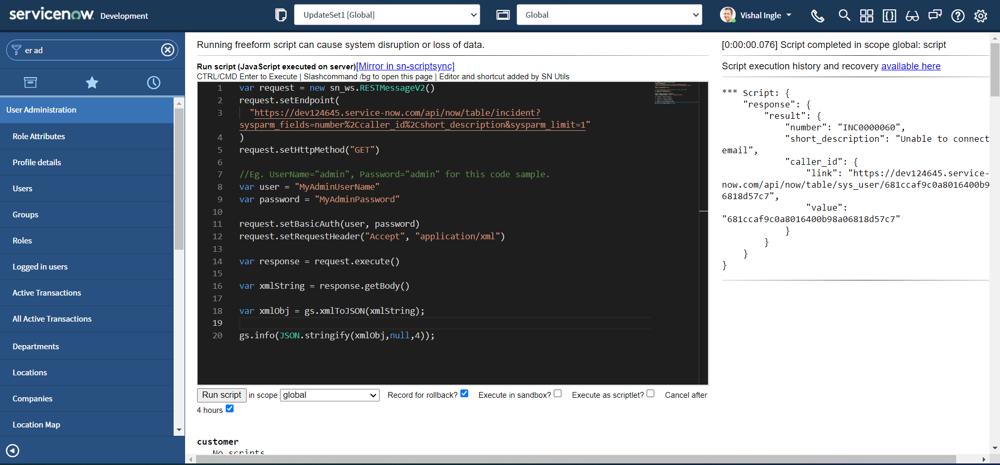
Though, the script worked totally fine, It is important that you pre-process the XML input before passing to xmlToJSON. You can read more about this in the Support article KB0784264. The modified script looks similar to this:
var request = new sn_ws.RESTMessageV2()
request.setEndpoint(
"https://dev124645.service-now.com/api/now/table/incident?sysparm_fields=number%2Ccaller_id%2Cshort_description&sysparm_limit=1"
)
request.setHttpMethod("GET")
//Eg. UserName="admin", Password="admin" for this code sample.
var user = "MyAdminUserName"
var password = "MyAdminPassword"
request.setBasicAuth(user, password)
request.setRequestHeader("Accept", "application/xml")
var response = request.execute()
var xmlString = response.getBody()
var xmlDoc = new XMLDocument2()
xmlDoc.parseXML(xmlString)
var rootNode = xmlDoc.getDocumentElement()
var xmlObj = gs.xmlToJSON(rootNode)
gs.info(JSON.stringify(xmlObj, null, 4))

XMLNode
The scoped XMLNode API allows you to query values from XML nodes. XMLNodes are extracted from XMLDocument2 objects, which contain XML strings. There are no constructors for creating a stand alone instance of an XMLNode object. Instead, use the createElement() method of XMLDocument2, which adds a node to an existing document.
getAttribute & getAttributes
getAttribute gets the value of the attribute. getAttributes Returns an object containing the node's attributes as properties with values. Let us consider the below sample XML document:
<xml>
<incident>
<active>true</active>
<assignment_group display_value="Software" name="Software">8a4dde73c6112278017a6a4baf547aa7</assignment_group>
<caller_id display_value="Bud Richman">46c6f9efa9fe198101ddf5eed9adf6e7</caller_id>
<category>software</category>
<cmdb_ci display_value="Sales Force Automation">a9c0c8d2c6112276018f7705562f9cb0</cmdb_ci>
<description>Unable to login to SFA even though login credentials are correct.</description>
<location display_value="324 South State Street, Salt Lake City,UT">105cf7f3c611227501e75e08b14a38ba</location>
<short_description>Can't access SFA software</short_description>
<sys_class_name>incident</sys_class_name>
<sys_created_by>admin</sys_created_by>
<sys_created_on>2021-11-07 22:05:30</sys_created_on>
<sys_id>a9e30c7dc61122760116894de7bcc7bd</sys_id>
<urgency>3</urgency>
</incident>
</xml>
Now, Let us modify the script to convert above XML string to XMLDocument2 Object and fetch the attribute display_value of element location i.e. 324 South State Street, Salt Lake City,UT:
var xmlString =
'<xml><incident><active>true</active><assignment_group display_value="Software" name="Software">8a4dde73c6112278017a6a4baf547aa7</assignment_group><caller_id display_value="Bud Richman">46c6f9efa9fe198101ddf5eed9adf6e7</caller_id><category>software</category><cmdb_ci display_value="Sales Force Automation">a9c0c8d2c6112276018f7705562f9cb0</cmdb_ci><description>Unable to login to SFA even though login credentials are correct.</description><location display_value="324 South State Street, Salt Lake City,UT">105cf7f3c611227501e75e08b14a38ba</location><short_description>Cant access SFA software</short_description><sys_class_name>incident</sys_class_name><sys_created_by>admin</sys_created_by><sys_created_on>2021-11-07 22:05:30</sys_created_on><sys_id>a9e30c7dc61122760116894de7bcc7bd</sys_id><urgency>3</urgency></incident></xml>'
var xmlDoc = new XMLDocument2()
xmlDoc.parseXML(xmlString)
var node = xmlDoc.getNode("//location")
gs.info(node.getAttribute("display_value"))
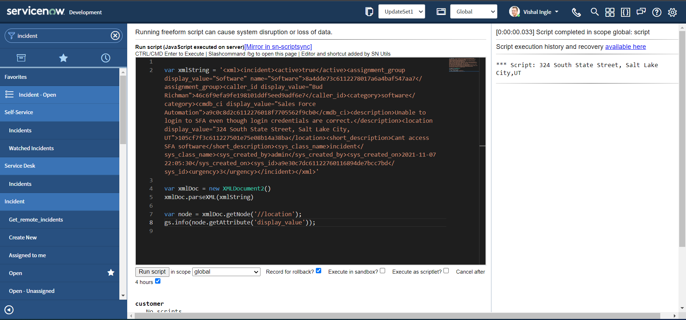
Now, Let us modify the script one more time to retrieve all attributes of element assignment_group as an object:
var xmlString =
'<xml><incident><active>true</active><assignment_group display_value="Software" name="Software">8a4dde73c6112278017a6a4baf547aa7</assignment_group><caller_id display_value="Bud Richman">46c6f9efa9fe198101ddf5eed9adf6e7</caller_id><category>software</category><cmdb_ci display_value="Sales Force Automation">a9c0c8d2c6112276018f7705562f9cb0</cmdb_ci><description>Unable to login to SFA even though login credentials are correct.</description><location display_value="324 South State Street, Salt Lake City,UT">105cf7f3c611227501e75e08b14a38ba</location><short_description>Cant access SFA software</short_description><sys_class_name>incident</sys_class_name><sys_created_by>admin</sys_created_by><sys_created_on>2021-11-07 22:05:30</sys_created_on><sys_id>a9e30c7dc61122760116894de7bcc7bd</sys_id><urgency>3</urgency></incident></xml>'
var xmlDoc = new XMLDocument2()
xmlDoc.parseXML(xmlString)
var node = xmlDoc.getNode("//assignment_group")
gs.info(node.getAttributes())
After executing the script, you should get an object logged to the output screen with all the attributes of assignment_group as properties with values.

getFirstChild & getLastChild
getFirstChild gets the node's first child node. getLastChild gets the node's last child node. Let us modify our script to see this in action:
var xmlString =
'<xml><incident><active>true</active><assignment_group display_value="Software" name="Software">8a4dde73c6112278017a6a4baf547aa7</assignment_group><caller_id display_value="Bud Richman">46c6f9efa9fe198101ddf5eed9adf6e7</caller_id><category>software</category><cmdb_ci display_value="Sales Force Automation">a9c0c8d2c6112276018f7705562f9cb0</cmdb_ci><description>Unable to login to SFA even though login credentials are correct.</description><location display_value="324 South State Street, Salt Lake City,UT">105cf7f3c611227501e75e08b14a38ba</location><short_description>Cant access SFA software</short_description><sys_class_name>incident</sys_class_name><sys_created_by>admin</sys_created_by><sys_created_on>2021-11-07 22:05:30</sys_created_on><sys_id>a9e30c7dc61122760116894de7bcc7bd</sys_id><urgency>3</urgency></incident></xml>'
var xmlDoc = new XMLDocument2()
xmlDoc.parseXML(xmlString)
var node = xmlDoc.getNode("//incident")
gs.info(node.getFirstChild())
gs.info(node.getLastChild())
Once the script is executed you should see the output as below, indicating first child element and last child element of node incident :
<active>true</active>
<urgency>3</urgency>
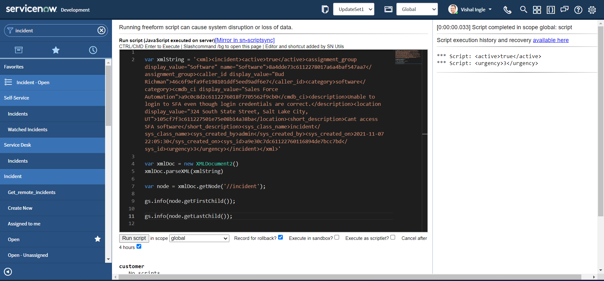
getTextContent
getTextContent gets the text content of the current node. The text content of a node consists of all the node's child text nodes.
Let us modify our script to understand these better :
var xmlString =
'<xml><incident><active>true</active><assignment_group display_value="Software" name="Software">8a4dde73c6112278017a6a4baf547aa7</assignment_group><caller_id display_value="Bud Richman">46c6f9efa9fe198101ddf5eed9adf6e7</caller_id><category>software</category><cmdb_ci display_value="Sales Force Automation">a9c0c8d2c6112276018f7705562f9cb0</cmdb_ci><description>Unable to login to SFA even though login credentials are correct.</description><location display_value="324 South State Street, Salt Lake City,UT">105cf7f3c611227501e75e08b14a38ba</location><short_description>Cant access SFA software</short_description><sys_class_name>incident</sys_class_name><sys_created_by>admin</sys_created_by><sys_created_on>2021-11-07 22:05:30</sys_created_on><sys_id>a9e30c7dc61122760116894de7bcc7bd</sys_id><urgency>3</urgency></incident></xml>'
var xmlDoc = new XMLDocument2()
xmlDoc.parseXML(xmlString)
var rootNode = xmlDoc.getDocumentElement()
var firstNode = rootNode.getFirstChild()
gs.info(firstNode.getTextContent())
var shortDescription = xmlDoc.getNode("//short_description")
gs.info(shortDescription.getTextContent())
You should be receiving the output as following : 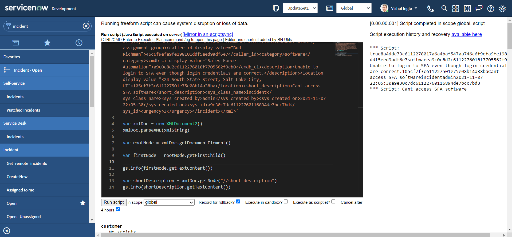
hasAttribute
hasAttribute determines if the node has the specified attribute. Let us modify the script to see this method in action :
var xmlString =
'<xml><incident><active>true</active><assignment_group display_value="Software" name="Software">8a4dde73c6112278017a6a4baf547aa7</assignment_group><caller_id display_value="Bud Richman">46c6f9efa9fe198101ddf5eed9adf6e7</caller_id><category>software</category><cmdb_ci display_value="Sales Force Automation">a9c0c8d2c6112276018f7705562f9cb0</cmdb_ci><description>Unable to login to SFA even though login credentials are correct.</description><location display_value="324 South State Street, Salt Lake City,UT">105cf7f3c611227501e75e08b14a38ba</location><short_description>Cant access SFA software</short_description><sys_class_name>incident</sys_class_name><sys_created_by>admin</sys_created_by><sys_created_on>2021-11-07 22:05:30</sys_created_on><sys_id>a9e30c7dc61122760116894de7bcc7bd</sys_id><urgency>3</urgency></incident></xml>'
var xmlDoc = new XMLDocument2()
xmlDoc.parseXML(xmlString)
var locationNode = xmlDoc.getNode("//location")
gs.info(locationNode.hasAttribute("display_value"))
gs.info(locationNode.hasAttribute("display_name"))
After the excution of the script you should be able to see the output as follows: 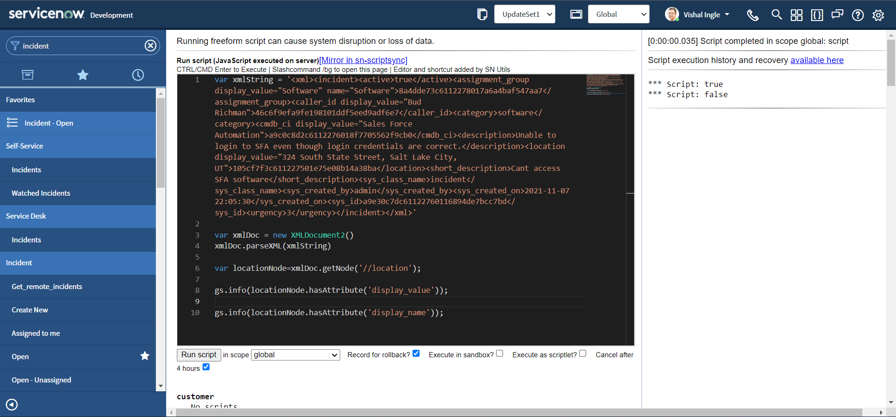
setAttribute
var xmlString =
'<xml><incident><active>true</active><assignment_group display_value="Software" name="Software">8a4dde73c6112278017a6a4baf547aa7</assignment_group><caller_id display_value="Bud Richman">46c6f9efa9fe198101ddf5eed9adf6e7</caller_id><category>software</category><cmdb_ci display_value="Sales Force Automation">a9c0c8d2c6112276018f7705562f9cb0</cmdb_ci><description>Unable to login to SFA even though login credentials are correct.</description><location display_value="324 South State Street, Salt Lake City,UT">105cf7f3c611227501e75e08b14a38ba</location><short_description>Cant access SFA software</short_description><sys_class_name>incident</sys_class_name><sys_created_by>admin</sys_created_by><sys_created_on>2021-11-07 22:05:30</sys_created_on><sys_id>a9e30c7dc61122760116894de7bcc7bd</sys_id><urgency>3</urgency></incident></xml>'
var xmlDoc = new XMLDocument2()
xmlDoc.parseXML(xmlString)
var activeNode = xmlDoc.getNode("//active")
gs.info(activeNode.hasAttribute("state"))
activeNode.setAttribute("state", "open")
gs.info(activeNode.hasAttribute("state"))
gs.info(activeNode.getAttribute("state"))
gs.info(activeNode)
After executing above script you should receive the output as below, indicating a new attribute state has been added to the active node with the value of open:

getChildNodeIterator & XMLNodeIterator
getChildNodeIterator gets a XMLNodeIterator object that can be used to walk through the list of child nodes. The scoped XMLNodeIterator class allows you to iterate through a node of a XML document. There are no constructors for creating a stand alone instance of a XMLNodeIterator object. To create a XMLNodeIterator object use the getChildNodeIterator() method of the XMLNode object. Let us assume the below example:
var xmlString =
'<xml><incident><active>true</active><assignment_group display_value="Software" name="Software">8a4dde73c6112278017a6a4baf547aa7</assignment_group><caller_id display_value="Bud Richman">46c6f9efa9fe198101ddf5eed9adf6e7</caller_id><category>software</category><cmdb_ci display_value="Sales Force Automation">a9c0c8d2c6112276018f7705562f9cb0</cmdb_ci><description>Unable to login to SFA even though login credentials are correct.</description><location display_value="324 South State Street, Salt Lake City,UT">105cf7f3c611227501e75e08b14a38ba</location><short_description>Cant access SFA software</short_description><sys_class_name>incident</sys_class_name><sys_created_by>admin</sys_created_by><sys_created_on>2021-11-07 22:05:30</sys_created_on><sys_id>a9e30c7dc61122760116894de7bcc7bd</sys_id><urgency>3</urgency></incident></xml>'
var xmlDoc = new XMLDocument2()
xmlDoc.parseXML(xmlString)
var node = xmlDoc.getNode("//incident")
var iter = node.getChildNodeIterator()
while (iter.hasNext()) {
var currentNode = iter.next()
gs.info(currentNode)
}
The ouput of these script logs all the nodes within the incident element :

The hasNext() method in the above code returns true if the iteration has more elements. Similarly, next() method gets the next element in the iteration.
getNodeName & getNodeValue
getNodeName gets the node's name. A node's name is determined by the node type. A document-element node's name is #document. A text node's name is #text. An element node's name is the element's name. getNodeValue gets the node's value. A node's value is also determined by the node type. Element and document-element nodes return null. Let us consider the below example from ServiceNow API documentation:
var xmlString =
"<test>" +
" <one>" +
' <two att="xxx">abcd1234</two>' +
' <three boo="yah" att="yyy">1234abcd</three>' +
" <two>another</two>" +
" </one>" +
" <number>1234</number>" +
"</test>"
var xmlDoc = new XMLDocument2()
xmlDoc.parseXML(xmlString)
var node = xmlDoc.getNode("//one")
var iter = node.getChildNodeIterator()
while (iter.hasNext()) {
var n = iter.next()
gs.info("Node name: " + n.getNodeName())
gs.info("Node value: " + n.getNodeValue())
}
The above script should display the output as below:

Where can you dig more?
There is a lot of useful information about XML present on the internet. But some of the interesting resources which you should definitely visit are given below:
- XML Tutorial by w3schools.com
- Using XML by J. David Eisenberg
- Introduction to the Annotated XML Specification by Tim Bray
What's next?
Originally this chapter was very long but I splitted it into three chapters. After all it was not the best place to introduce you with all of that concepts right away. We will visit them as and when required. In the next chapter we will modify our script using REST Message, which is more better than coding everything in a script. See you in the next chapter.